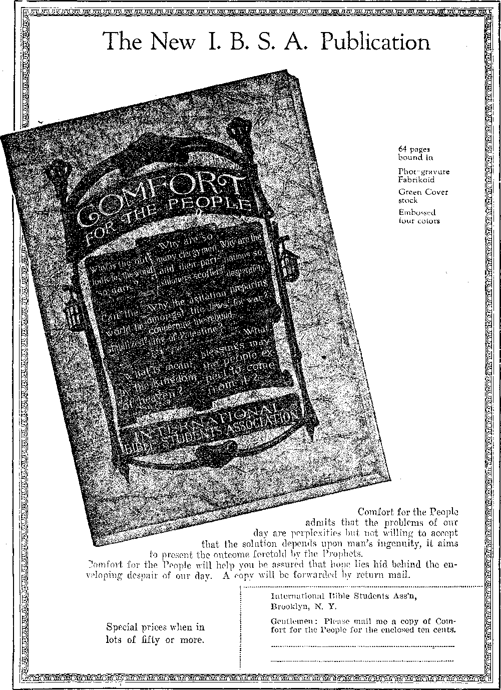

.......... , .,:=........::: w
' Labor and Economics
Sundry News Items .......... ■
.Wages of Soft-Coal Miners . .
■ Social and Educational
Why Suicide? Move to Chicago . ., , . . . . . . . . . . 716
Bitter Contrasts in Britain ..........
The Value of Listening at a Keyhole -. .
Finance—Commerce of—Transportation
Chinese Eggs Arrive Too Rife ........
Pike’s Peak Railroad Sold ............... 716
Woes of Third-Class Travel .........
Political—Domestic and Foreign
■Woman Advocates Abandoning of Home . . . .....
The Liberals Dying Off ........
Government Loses Teapot Dome Suit ......
Travel and Mis cell a nt
What We Can Do for Birds ........
, Amundsen’s Remarkable Achievements . .
Opens Subterranean Rivers .....
Religion and Philosophy
What They Teach in Ireland ............ .
New .Heavens and New Earth—What are They ? ....... 729
Studies in “The Harf of God” . . . . . . . . . . . . . . 735
Published every other Wednesday at IS Concord Street, Brooklyn, N. Y., U.S.A., by WOODWORTH, HUDGINGS & MARTIN
Copartners and Proprietors Address.’ 18 Concord Street, Brooklyn, N. Y., 17. S. A., CLAYTON J. WOODWORTH . . . Editor ROBERT J. MARTIN . Business Manager WM. F. HUDGINGS . . See’y and Treas.
Five Cents a Copy—$1.00 A Year Make Remittances to THE GOLDEN AGE Foreign Offices : British.....34 Craven Terrace, Lancaster Gate, London W. 2
Canadian ...... « . . . 540 Irwin Avenue, Toronto, Ontario Australasian . 495 Collins Street, Melbourne, Australia
South African ...... 6 Lelie Street, Cape Town, South Africa
Entered as second-class matter at Brooklyn, N. Y., under the Act of March 3, 1879
Volume VI Brooklyn, N.Y,, Wednesday, August 12, 1925 Number 154
population. The eastern states are estimated to harbor over two billion native field birds.
The Bronx Zoo, in New York city, contains 800 varieties, ranging in size from the tiny humming bird, but little over an inch in length, to the ostrich, seven feet in height.
What They Do for Us
THE birds give us food to eat and clothes to wear. Without them successful agriculture would be an impossibility. They insure the growth of our shade trees, and dispose of the caterpillars which otherwise would drop down the backs of our necks when we walked beneath.
The Department of Agriculture estimates that the passage of the Migratory Bird Law, which forbids the shooting of game birds in the spring, has already gained in food to the nation not less than $2(^000,000. In some districts where the birds had become almost extinct the numbers are rapidly increasing.
From a purely economic standpoint it may be said that there are six classes of birds which are useful to mankind; those that destroy insects, those that destroy weed seed, those that destroy small rodents, those that serve as scavengers, those that serve as game, and those that supply eggs.
From the standpoint of the satisfaction of our senses of sight and sound there are few more pleasant things in nature than birds. They are graceful in repose and in flight, many of them beautifully colored and some of them with happy little songs that cheer the heart.
Knowledge of the value of birds has so progressed in the North that songbirds are regarded as an asset, and farmers do not permit the killing of them on their lands. In the South there is much killing of birds for food and for sport, and some regard this as one explanation for the spread of the boll weevil, which has done so much to destroy the South’s best crop.
Photo.
THIS is not an article about angels. We make this explanation at the outset, because we just heard that a priest, returned from the holy show at Rome, expressed himself as greatly dissatisfied with some of the relics on exhibition there, particularly a feather from the wing of the Angel Gabriel. He seemed to think it a fake, and' that Gabriel was not moulting at the time of his last visit here, as alleged. This article is about birds.
Birds are queer. There is no getting away from it. The slang phrase that a certain man is “a queer bird” conveys the idea that it is hard to understand him. There are many things about birds that we cannot understand, and for that reason, and because they are so much like human beings, they interest us.
The higher types of birds are like the higher types of human beings. They select their mates and remain true to them throughout life. The qualities common among men are common among birds—love, jealousy, vanity, fear, courage, cowardice, sociability, playfulness, gluttony, and devotion to the home.
The study of bird life is as innocent a diversion and as fascinating as any in which humans engage; yet one who stands and watches the birds for a few minutes is often thought to be unbalanced. One gentleman in a town, suburban to New York, was questioned by a policeman concerning his peculiar conduct. The officer confided in him that the residents of the little town thought him so queer as to require watching. “Do they ?” exclaimed the amazed old gentleman, “How very extraordinary! Here is my card. It may explain matters.” The card read, “Professor Malcolm Ogilvie, New York Ornithological Society, 53 Jane Street, New York.”
Government experts estimate that Maryland has the most numerous bird life, with an average of seven pairs to the acre, while the arid lands of the Southwest have the smallest bird
. Realizing that eats are the natural enemies of birds and do more than any other creatures to decimate bird life, some bird lovers are carrying on a campaign for the extermination of all the cats in the world. Their claim is that eats never kill insects, and that but for the birds the insects would in a few years destroy all crops and all green things.
But there are other foes to birds. The Marquis of Ripon, reputed to be the best shot in the world, killed 88,355 birds in the years 1889-1894 and was stricken with death at the ■ end of a morning’s shooting in which he had bagged fifty-six brace of grouse. Perhaps Ue who marks the sparrow’s fall gave the marquis something of poetic justice. When he awakens in the resurrection he will be less eager to take what he cannot give.
HPHERE are several things which almost any person can do for the birds. Winter birds can be fed; fruit-bearing shrubs can be planted that will furnish food for the birds, as well as be attractive in themselves; pans of water can be put out for the birds in times of drought; cats and air guns can be reduced in number or controlled; and nesting boxes can be put up for bluebirds, wrens, martins, tree swallows and other hole-nesting birds.
The tendency to drain every marsh and clean up every bit of underbrush can be restrained somewhat. If overdone it would leave almost no place in which' the birds could find a natural home. It is getting harder and harder every year for the birds to find nesting places and feeding grounds.
The New York State College of Forestry recommends the native red cedar as not only an excellent tree for ornamental purposes, but as also providing an excellent shelter and nesting site for birds. They also find food in the berries and insects commonly found on the tree.
The native flowering dogwood and the Chinese flowering crab-apple are two particularly beautiful trees that are favorites with the birds. The grey-stemmed dogwood, honeysuckle, American elder and sheepberry are also serviceable to the birds and ornamefital. The Virginia creeper, one of the most popular vines, furnishes nesting sites for birds and draws the attention of the birds away fromgrapes, apples and peaches.
Teachers are doing something for the birds by teaching the young the value,- the preciousness of each little Individual life, how easy it is to take it and how impossible to give it back. Children can be taught that it is a crime to molest the homes and steal and destroy the young of defenceless fellow creatures.
OLDER persons can be taught by precept and example the unfairness and the unwisdom of slaying birds for food, or for sport so-called or for vanity. Millions of beautiful birds have died unnecessarily to supply feathers for women’s hats. It is not the uncivilized women that are responsible for these slaughters, but the supposedly civilized ones. ■
Legislatures can do something. President Roosevelt was a. great bird-lover and was responsible for several bird reservations, at the mouth of the Mississippi, in Florida, in Oregon, in the Aleutian'islands and elsewhere. Audubon societies for the preservation of birds have been formed in forty states. London is the headquarters of an international committee for carrying on propaganda for the preservation o f birds. One of its proposals is governmental prohibition of the sale of feathers of rare birds.
The American Ornithologists' Union, with 1600 members, maintains a bird magazine, The Auk, which investigates the problems of migration and nesting of birds. It advises grown people and others to mix in the affairs of young birds as little as possible. Avoid frequent or close approach to the nest. Enemies of- various kinds often-follow the trail. Also, the young may leave the nest prematurely, with fatal results. ■
Ambassador and Mme. Jusserand became so attached to the birds of Piny Branch Valley, Washington, that on their return to France they sent to the valley, as a permanent expression of gratitude to the' songsters, a stone bird-bath, the work of French artists.
A BIRD lover says : “Many perils beset the bird—cats, wild beasts, snakes, boys, gunners, parasites, disease, famine, thirst, wind storms, hail, sleet and snow storms, forest fires, brush fires, and bandit birds, such as owls, hawks, crows, jays and other feathered pillagers that eat the eggs of other birds and kill fledglings and full grown birds. Millions of land birds—the sparrows, warblers, redstarts, indigo buntings and all the other migrants—lose their lives in storms at sea.”
In order to avoid the larger birds, most of the smaller ones make their migrations at night. In the darkness they have several foes. Winds blow them out of their course. Tall, dark objects across their paths are not seen. As many as 150 bird corpses have been found at the base of Washington monument in a single morning. Lighthouses with a steady white light bewilder them; they turn aside and weary themselves going around and around the light until they fall to the ground or into the sea. Bird deaths at the Statue of Liberty run to 700 per month. English lighthouses are equipped with perches for the convenience of bewildered birds attracted by the lights. Many lives are thus saved. A flashing light frightens the birds away; they will not come near a red one.
Bird catastrophes are sometimes witnessed. In September, 1879, a violent storm over Lake Michigan strewed the eastern shore of the lake with about a half million dead birds, as nearly as could be estimated. On one occasion passengers on a vessel thirty miles off the mouth of the Mississippi river witnessed the death of hundreds of birds. They had been flying north across the Gulf of Mexico, but encountered a t;norther” with which they were unable to contend, and were compelled to drop into the gulf and drown.
In November, 1923, thousands of birds, blown out to sea by unfavorable winds, landed on the Cunard liner Scythia and stayed on board until she docked in Liverpool. These birds were probably migrating from the North Atlantic states to the northern shores of South America.
Birds have some means of notifying each other of districts to be avoided. In the Sandwich Islands are certain caves filled with volcanic gases. These caves are deadly to all life; but it is a noteworthy fact that no birds are ever seen in that vicinity, though everywhere else in the islands they are extremely plentiful.
NLIKE man, who seems more ready to shift his home to where he is afforded the most favorable conditions for existence, most birds cling tenaciously to the. immediate surroundings in which they were cradled, when it comes to a selection of a nesting site. This fact was first demonstrated by sea birds known to breed on certain islands, and on these only. More recently it has been shown that many of the lesser birds cling persistently to their nesting site; and it has even been found that some not only seek the same general region, but the same shelf of rocks and even the same nest year after year.
It is only a few hundred years since people believed that the birds which disappeared on the edge of winter flew to some undiscovered satellite near the earth. Now the summer and winter habitats of many birds are known. Certain birds travel unerringly betwnen certain portions of Chile and places in the United States. The winter resorts of Europe’s birds are the valleys of the Nile and Congo. Canadian birds are found in Brazil.
In Europe there are now some twenty organizations interested in bird banding. The device finally settled upon as most satisfactory is a numbered aluminum band or ring, attached to the tarsus, or bare portion of the leg. By this means much valuable information has been collected.
The greater number of birds migrate at distances about 3,000 feet above the earth, although by means of instruments so fixed as to scan the surface of the moon some have been discerned at 15,100 feet. The density of the air at such a height is only half what it is at sea level. In the South it is observed that birds which go north latest in the spring return earliest in the fall.
Migration is for food. Robins and certain other birds will not migrate from Connecticut to the South if fed regularly all winter. Birds are great eaters, many breeds eating several times the weight of their bodies in the course of a day. They can do this because much of their food consists of insects and worms, composed largely of water, wdiich imposes very little tax on the digestive organs. Some birds in the Lincoln Park Zoo, Cliicago, will eat nothing but snakes.
THE albatross, with a vdng expanse of twelve feet, is the largest of the web-footed birds.
Sometimes flocks of fifteen or twenty of these follow ships from San Francisco for thousands of miles.
Blackbirds to the number of hundreds fell suddenly to earth lifeless in March, 1924, on the farm of J. R. Lippincott, Burlington, X. J. The bodies showed no signs of poison, and it is conjectured that in some manner they were slain by conflicting radio currents.
The-bobolink, a bird common everywhere in the eastern part of the United States, starts south in August, at which time he changes his feathers, his character and even his name, and becomes the low-voiced, dull-colored reed-bird of the Delaware and Chesapeake Bay region.
The bluebird is a bird to make you glad you are. alive to see it and to hear its melodious song. Some one has said: “To associate with him and to gaze on his tender little ones is to give your broken spirit such a bath of beauty and wholesomeness, and to create such a consuming interest in the general plan of things in the world, that you are completely overwhelmed by everything as the Creator has made it.”
The bower bird of Australia and neighboring islands is so called because the males build -bowers or play houses, dome-shaped, a few inches long, floored with twigs. The ornaments are bright feathers, bits of glass or anything bright. One variety builds a run three feet long, a platform of twigs with a hedge of upright twigs at either side. ■
THE canary is the prize of songbirds, but has to be trained. There are several schools in Yorkshire and Lancashire, England, where by means of a bird organ the canary is taught first one note and then another. The ideal training gives the bird four distinct notes: the water note, which, as its name implies, is a rippling gurgle like the murmur of a rill; the whistling note; the flute note; and the rolling note, which is a continuous melody, splendidly rising and falling. The canary is a wonderful imitator and therefore an excellent student.
Henschel, the ornithologist, tells of a bullfinch which had been taught to pipe the tune “God Save the King”, and of a young canary which learned it from him. At length the canary became so proficient that when the bullfinch, whose cage was in an adjoining room, stopped after the first half a little longer than the proper rhythm warranted, the canary took up the tune where the bullfinch had stopped and finished it. This happened several times. . .
There is a bird tavern in New York, where choice birds are provided with fresh fruit, vege-
E1K.KI.IS,. W, ,T.
tables and salads, and entertained with dolls, bells and balls. Ono of the guests is a cockatoo, with a white coat, a beautiful crest and a salmon chest. This bird, Coca, laughs at a funny story, drinks from a glass, swears, washes and feeds a china doll, and wraps himself in a newspaper when he sleeps.
The condor is the largest bird that flies. The true condor is a native of the South American Andes, but specimens have been known to visit California and Europe. In 1922, high in the Alps mountains a mother engaged in weeding the garden left her baby sitting on a blanket on the grass. A condor swooped down and seized the child. Its father saw the act, ran for his gun and, being an expert shot, brought the bird to the ground. It fell so slowly that the child was only slightly injured. The wing spread of this bird was found to be seventeen feet and five inches. Condors fly at enormous altitudes, and have wonderful eyes and keen sense of smell. The name is derived from an old Indian word meaning a good smeller.
The cormorant is the prize fish catcher, and pursues fish under water with inconceivable rapidity. Chinese fishermen train cormorants to catch fish. A ring on the neck prevents the bird from swallowing the fish until the owner is satisfied. Cormorants find pleasure in playing with live fish in the same way that a cat plays with a mouse. The fish is tossed into the air and caught again and again in the spacious bill.
THE cowbird and the cuckoo are spongers.
They build no nests of their own, but deposit their eggs among those of other birds, which do their work for them and furnish the home free of charge.
The crow is the acme of craft, cunning and cruelty. He can count to three. If three persons enter a cornfield to lie in Ava.it with guns, the crows will remain in distant tree tops until three persons have gone out before they will enter the field; but if four persons enter and three go out, the crows miss their count and return to the field.
In the crow language there is one cry for “danger ahead”, another for “let’s go”, while a still different cry declares that “all’s well”. The average crow takes delight in perching on the tattered hat or shoulders of a scarecrow. He is
a great weather prophet. If rain is imminent lie will rise from his nest, wheel about overhead and return. If his stay in the air is short the storm is nigh; if he remains some time in the air the storm will be slow in coming; if he remains long in the air and at the same time is -very noisy, the disturbance will be severe.
The crow’s appetite for the eyes of animals is particularly atrocious. He will eat the eyes of live kids, lambs and fawns, and has even been known to pick out the eyes of small children. Instances are on record where crows have been seen to alight on the ears of a deer and peck at its eyes. While a hawk or an owl will endeavor to kill its prey as quickly as possible, the crow will leisurely eat its victims alive.
Crows are sometimes kept for pets and become quiet and peaceful. They have even been known to talk. Jaco, a crow that has been exhibited at the New York Hippodrome, is so valuable that an insurance of $50,000 is carried upon his life.
The dove is the opposite of the crow, so much so that the Lord made choice of this beautiful, innocent, gentle creature to represent the holy spirit. It was the dove that was sent forth from the ark, the dove that was acceptable as a burnt offering, the dove that was honored in the writings of David and Solomon, and the dove that rested upon the Lord at the time of his baptism. The dove is so affectionate that if placed in a sick room it will manifest such sympathy for the ailing person as to cause its own death.
TIME was when the American eagle was to be found almost everywhere on this continent ; audit is still plentiful in Alaska, where approximately 25,000 were killed during the years 1917 to 1923, on the ground that eagles were seriously affecting the salmon supply by destroying the fish while spawning in the small streams, also that they' kill a great many fawns of deer, and young forest and shore birds, as well as ducks and geese.
The eagle is a bird that is naturally shy and wary, clean and handsome, swift in flight and strong in body. He is as formidable as any creature of the wild, being more than a match for any animal of his size. He stands firm before every bird or animal that can come against him excepting only man. Eagles mate for life and remain together year after year. The* same is true of swans and geese.
On the same day, in January, 1921, two boys in Depere, Wis., had a thrilling battle with an eagle that attempted to carry one of them away, while in Tampa, Florida, two other children were attacked. In the latter instance the bird was shot and killed, measuring six feet from tip to tip. In July of the same year two women of Greensburg, Pennsylvania, succeeded, after a desperate battle, in recovering from an eagle’s talons a three-year-old child just as the eagle was about to fly away with the little one. In November of the following year New York crowds along Riverside Drive were thrilled by the sight of an eagle 1,500 feet in the air, flying along with a dog in its talons. Pedestrians at first supposed it to be an airplane.
Near Santiago, Chile, in February, 1922, a soldier shot an eagle and supposed that he had killed it. When he approached, the bird attacked him furiously. In the struggle which followed, one of the eagle’s claws clutched the trigger of the gun, which was discharged, the bullet entering the man’s body. He died in the arms of his companions.
Eagles, buzzards and cranes fly through the air for minutes and even for hours without moving their wings. Their broad, light wings are spread to catch the upward moving currents of air; and with their wonderful wings, steering tail-feathers and marvelous muscular and nervous systems they are able to sail forward in any direction, propelled by the powers of nature.
From a thousand feet in the air the eagle sees the hare, a mere speck, and falls upon him like a thunderbolt.
An eagle recently tied up communication between the Atlantic and Pacific coasts for a short time. She built her nest on the transcontinental telephone line. Not content with sagebrush and survey stakes she put in some pieces of wire and spare automobile parts and caused a short circuit.
T HE flamingo is a splendid flame-colored bird that is now extinct except in the Bahamas.
The flamingo is easy to see, easy to kill and easy to eat; and nothing but careful protection on a bird reservation can save it. When an intruder approaches the nests of the flamingoes they utter a deep, trumpet-like call, and at a signal from the leader spring into the air, a flaming mass, soaring away until they become a mere rosy cloud on the horizon.
-The gardiner bird of New Guinea clears a space about a small tree and erects a circular wigwam of twigs -with a cone of moss inside it. There are two doors to this little house; and in . front of one of them a carpet of moss is laid, which is kept very clean and made attractive with bright-colored insects, fruits and flowers. When the flowers become withered, the bird exchanges them for fresh ones.
The gull has the distinction of being able to fly over great spaces of water, and to keep going longer without stop or rest than any other-known creature. On a trip across the Atlantic Ocean there is only one day when gulls are not seen. When weary the gull tucks its head under its wing and sleeps, riding the waves like a ship. The gull is a simple-minded bird; hence.the term '“gullible” as applied to men.
Now that oil-burning vessels are becoming common, many gulls, auks, puffins, loons and other sea birds, pounce down upon oil patches on the waters, only to find themselves coated with a substance which they cannot remove. The oil bunches the feathers together, allowing the cold water to penetrate to their skins. They catch cold and die. The gulls are learning to avoid the oil patches, but the slower-witted auks and loons are fast disappearing.
rpHE hawk is the natural foe of the poultry yard, but eats other birds too. Wild birds pursued by hawks always fly upwards. As long as they fly upward the hawk cannot catch them; but if they make a mistake and try to escape by flying downward, the haw’k soon overtakes them. Hawks are valuable in keeping fields free from destructive animals.
The hoactzin of Brazil is a bird about the size of a chicken, able to fly short distances, to swim short distances, and to climb trees. It thrives only on the leaf of the aninga tree. None have ever been transported any great distance successfully, because of the futility of trying to keep on hand a supply of fresh aninga leaves.
The loon, or great northern diver, is a magnificent bird some thirty inches in length. It has a wing stretch of four feet, and lives on fish, wfliich it pursues by diving. The weird
Brooklyn, N. Y.
laughter of the loon is akin to the cry of a maniac and has given rise to the expression “crazy as a loon”.
The macaw is sometimes trained as a pet. A lady in New York had one of these birds, known to his friends as Major Teuber. The Major got into his mistress’ dressing room, and ' ate a quarter-pound box of lip salve. They saved his life by rushing him to New York’s bird hospital, more generally known as. the Virginia Pope hotel.
Nightingale, Ostrich, Owl
HE nightingale is considered the most beautiful of all the singers. As its name implies, its song comes in the night. It is not the song of a lady bird, as most of the poets have it, but is the song of joy of the. male at having finished his migratory flight from far-off southern climes.
The ostrich is the largest, strongest and fleetest of the flightless birds. The males reach a height of eight feet, weigh 300 pounds, and can run up to twenty-seven miles per hour. Contrary to general belief, the ostrich never buries its head in the sand. It has an exceptionally keen eye; and when it discerns a foe at a distance it lies down, in which position at a distance it may be easily mistaken for an ant hill. Its object in lying down is to get measurably out of sight.
When an ostrich settles itself to run, it holds its head lower than usual and a little forward, with a deep loop in the neck. The neck vibrates sinuously; but the head remains steady, thus enabling the bird, even at top speed, to look around with unshaken glance in any direction. The wings are held loosely just free of the plunging thigh. There is no. attempt to hold them extended or to derive any assistance from them as organs of flight.
There are ostrich farms in South Africa,, at Pasadena and Los Angeles, California, Jacksonville, Fla., Hot Springs, Ark., and in Oregon. Near Phoenix, Arizona, there is an ostrich farm, with 3,000 birds. Each bird yields about one and one-half pounds of feathers, worth about $20.00. The New Zealand ostrich, now extinct, had a height of twelve feet.
The owl is a bird of prey, and quite a savage one at that. A pair of bam owls is considered, better than a cat to rid the premises of rats and mice. They also eat rabbits, woodchucks, squirrels, chipmunks, rats, and gophers. Not long ago the city of Conneaut, Ohio, had a, plague of owls. They were not content merely to roost in the trees and salute pedestrians with. their ""whoo, whoo”, but in several instances flew from their perches and attacked persons passing below, probably mistaking them for other animals. They have been known to attack hunters. At Turner, Maine, a horned owl more than three feet in length picked up a 50-pound calf and flew over a stone wall with it.
HE bird of paradise is the most beautiful and perhaps the vainest of all the birds.
He comes from New Guinea and neighboring islands. The beautiful plumage is confined to the adult males, nature’s method of preserving the species. The males have a peculiar way of causing waves to go over their bodies, thus showing off their plumage. One of these males, at the height of his beauty display, was observed in the New York Zoo to hang head downward and go through various contortions, all to attract the admiration of the crowds. ‘
The parrot is considered the most intelligent among the birds. Of the 500 odd species the best talker is the red-tailed gray parrot of Africa; next is the yellow-headed one of Mexico. Either of these can be taught fifty or more words. They are quite affectionate, but changeable and quick tempered. In Paris a parrot is alleged to have given the police the name of his master, causing the latter’s arrest and conviction as a thief.
The Pittsburgh Press tells the shameful tale that at Nice, where in winter the idle from all over the world walk on the Promenade des Anglais, men sell tiny birds like parrots, beautifully colored, wonderfully tame. These birds sit on a little stick held in your fingers, and never fly away. A woman discovered that the entire taming process consists in putting out the poor creatures’ eyes. Seeing nothing, they fear everything, and especially to lose their hold on. that little stick. Would you think that any man could be so mean?
Study of the pelican has disclosed that it is a friend of man. It eats no fish that are useful for . human food, but it does eat fish that frequently go in great schools into the nets and sometimes tangle the nets up so that they have to be cut to get the fish out. . • A writer in the New York American calls attention to the interesting fact that the phoebe perches familiarly on the clothesline and makes its nest anywhere about the premises of human beings, while other birds that look so much, like it that only an expert can tell the difference, avoid human beings as they would the plague. The question naturally arises as to why this should be so, and it still, awaits an answer.
THE pigeon family numbers several hundred species. One of these, the passenger pigeon, which within a few years existed in the United' States by the million, is now supposed to be nearly or quite extinct. Only a generation ago a flock of these birds would fall upon a wheat field and devastate it in a few minutes. The front birds dropped at the first sight of food, the others settling beyond them, in regular order, the last birds settling farthest at the front. In a few minutes the first birds would be again at the front and thus the entire flock, revolving like a cylinder, cleaned the field of all it possessed.
Another well-known member of the pigeon family is the homing pigeon. In Europe, and to some extent in America, the releasing of homing pigeons at a distance is a popular sport. Of five thousand pigeons released at Washington in September, 1921, the first to arrive home at a distance of 204 miles consumed six hours on the trip, or about thirty-four miles per hour. In a short flight a homing pigeon will sometimes fly at a speed of eighty miles an hour.
The golden plover is the prince of travelers among birds. In the spring he comes overland from South America by way of the Mississippi valley and lands at length in Nova Scotia; but when fall comes he disdains to return by the way he came and sets sail direct from Nova Scotia to the coasts of South America, a distance of 2,400 miles. How he can do this year after year without losing his way is stated by Sir Alfred Newton to be the greatest mystery which the whole animal kingdom presents. The suggestion has been made that the golden plover is sensibly affected by the lines of magnetic force and” is thus a living compass.
Of the plover family is the crocodile’s dentist, the Egyptian plover. When the crocodile leaves the water he holds his mouth, open, facing the< breeze. At such times the plover goes into his mouth, picking the leeches and other parasites i from his teeth, lips and gums. This dental operation occurs once a year.
The most abundant birds in the United States are the robin and the English sparrow. The latter was brought into the United States in 1851 and liberated in the parks of Boston and ‘ New York. Being a stranger, and therefore without any natural enemies, he throve so remarkably as to threaten America's own song birds with destruction. Today there are millions • of these little fellows in all parts of the United States; but the crows and blackbirds have discovered that the sparrows make good eating, and are now giving them their undivided attention with the result that it looks bad for the English sparrow. This little bird averages to eat about a hundred insects a day. There are about 500 varieties, of sparrows.
HE London Daily Herald contains the following story about a sparrow:
“Whilst at my work in a railway signal box at Burnley, Lancs., I happened to have, occasion to go out of the box, and I saw a hedge-sparrow apparently feeding another one. 1 paused for a few moments, and the sparrow flew away, and then I saw that the remaining one had been injured, presumably by a goods train which had recently passed. You can imagine ray amazement, when, after a minute or so, the sparrow which had previous!}' flown away returned, bringing more food to the injured one. After a few minutes the injured bird tried to hop away, and eventually managed, after much resting—and with the other, which I took to be its mate, constantly hopping attendance upon it—to get to the hedge side. I came to the conclusion, that it was in much more capable, if not more sympathetic, hands than mine, and proceeded towards the water well, marveling at the lesson which these little sparrows 'could teach to mankind.”
One of our contributors, Susan E. Clark, gives us a somewhat similar story:
“One day the family noticed a young chipping sparrow following a female English sparrow about; and fearing that the older bird might turn and fight the little one, they watched them. To their surprise they saw the young bird hop on the back of the other, which made no objection; and soon the English sparrow began picking up the crumbs about the door and feeding the little chippie. This was amazing enough, but later it was observed that the whole brood of chippies was about, which the parents were feeding, while the English sparrow was helping them. One was found to be a cripple, and was watched over by the house people, for several days to save it from prowling cats. 'The English sparrow gave special attention to the little invalid; and finally the parents left him entirely to the care of the nurse-maid, and devoted themselves to feeding their healthy offspring. The faithful nurse watched and fed her charge for several days, until one night a drenching rain proved too much for the frail birdling on the ground., and in the morning it was found dead. The family buried it, and soon the English sparrow came to the spot with food in her mouth for her charge. Not. finding him, she continued to come at intervals for several days, and waited around mournfully with food in her bill. But. the parents of the little one never appeared to look for him.”
While we are aboixt it we give a third bird story, this one from the New York Times.
“Paris.—Long voyages of migrating birds are well known, yet it is not always easy to obtain tangible evidence of their journeys, and bird lovers will be interested in the story from Alsace about a. swallow’s water travels and sojourn. Last fall a resident of Ostheim captured a swallow nesting in a gable and released it, with the following message on parchment attached : 'During the summer of 1921 I lived with----,
at Ostheim. He would be glad to learn where I passed the winter when I return.’ The bird now returns to its Alsatian home, bearing the following inscription: ‘Have been staying with, a shoemaker, Joseph Bady, on the Island of Martinique, who salutes my present host.’ ”
And our last bird story is from the New York World. It is so remarkable that if it were not a bird story we would almost be inclined to think it a fish story:
“An army of invading chimney swallows ranging from 7.000 to 10,000 in number will follow their leader down or up a chimney.” Dr. F. M. Chatman said yesterday, “This proves that the bird story from'Kingston, N. Y., was not a ‘fish story’. . . . Frank V. Rice, a shipbuilder, and his wife were the victims of the surprise party. . . . ‘When we returned home Tuesday evening the room was filled with birds. The walls were black with the soot from their wings. Some were perched, asleep on the mantel; others had crawled into cream pitchers; still others were flying around and around the room. We opened the windows and the doors; we tried to chase them back up the chimney and down the cellar; but all in vain, 'they believed that they had found a nesting place for the summer, I guess; for several already had found some thread and string and were weaving these into nests in corners of the ceilings. Finding we could not chase them out, we started action. Chairs, brooms, sticks and anything else we could get were used in sav-? ing v:hat- v/as left of the inside of our home.’ Last night Mr. Rice was still counting the dead, which filled two cider barrels and two coal shovels. He estimates that there are 5,000 dead and that 5,000 escaped.”
THE Dearborn Independent tells us that in . a lake in one of the western provinces of Canada there are still preserved a few specimens of the trumpeter swan, a beautiful white bird with a wing spread of ten feet, which once ranged from Hudson Bay to the Pacific Coast and south to the Gulf of Mexico and southern California. Until recently this beautiful bird was supposed to be extinct. The Canadian government has appointed a caretaker of the last remaining representatives.
Among the curious acts performed by birds are those of the tailor bird, which forms a nest by sewing together with grass the edges of growing leaves; the weaver birds, which form an association and collect a rainproof roof of leaves, under which they all build; and the brush turkey of Australia, which amasses a heap of several tons of leaves, apparently for the warmth produced, for leaves heat like a hotbed.
The most famous globe trotter is the Arctic tern, which makes its summer home within a short distance from the North Pole and its winter home at the opposite end of the earth. Every six months it takes this journey of something like 10,000 miles, so as to be in the climate which it prefers. It breeds as far north as it can find land for nesting and winters as far south as there is open water for feeding. The scarlet tanager summers in Canada and winters in Peru. A common tern banded in Maine was found four years later in Africa. A wild, duck banded in Maine was found two months later in Trinidad.
Polygamy is customary with some birds. One of these natural polygamists is the beautiful long-tailed whidah of Africa. He gathers to himself about six females, which he watches over with as much care as does any sultan over his harem. The grackle is also a polygamist.
■ Every waterfowl, such as the duck, dresses its feathers with oil which it presses from a gland above the tail. There are two weeks in August in which wild ducks cannot fly. All members of the family lose all their large wing feathers at the same time. Geese also moult in the same way, losing all their large wing feathers at once.
Woodpeckers, of which there are 300 species, are found everywhere except in Australia and Madagascar. A grub is located in a dry tree, either by listening or- by inspecting. Straightway the woodpecker drills a hole until the grub is uncovered. A long sticky tongue finishes the job. The woodpecker is considered so valuable as a timber preserver that stringent laws for its protection are common in the West. Woodpeckers have been known to tackle a tin roof or a slate roof in order to try to reach the grubs which they hear in the timbers underneath.
An interesting and curious service which certain birds render in the Thana district of India is to plant the seeds of the tall Palmyra palms in the tops of Bengal fig trees, making it seem as if one variety of tree is growing out of another; and such, in fact, is actually the ease. At all times these parasite palms look singular, but especially when young, the foliage being so different from that of the fig. -
MUCH of the cake made by bakers in the
United States contains eggs that were laid in China. Millions of such eggs arrive yearly, and in fairly good condition ; but a lot valued at $25,000 recently came into San Francisco which, it seems, were stored too close to the boilers. As a result, when the ship arrived at San Francisco the eggs that were not chirping were in a condition -where their chirping days were forever past. At least that was what the odor indicated, and Uncle Sam’s doughty custom inspectors pitched the whole batch into the Bay. Now there is great excitement in the effort to determine who is to stand the loss; for the shippers claim that they did not understand the steamship company would put the eggs into incubators, and both the shippers and the steamship company think that Uncle Sam could have saved an egg or two if he had tried. But Uncle Sam’s defense is that his nostrils were sorely offended as it was, and that he is not in the business of running a chicken farm.
[Radiocast, with other items, from Watchtower WBBR on a wave length of 272.6 meters, by the Editor]
PRISON labor closes shoe, shirt and overall TXTHY put yourself to all the trouble and infactories. It puts on the market annually VV convenience of committing suicide when
THE average soft coal miner has work only half the time. When he does work,' if he is a union miner his wages average about $1,671/2 Per t°n; if he is not a union miner his wages average about $1 per ton. The soft coal business is in a bad way. For one thing there seems to be too much coal on hand. The market is easily glutted. It seems like a bad time for the anthracite miners to go on strike; for the use of coke is making inroads into the hard coal market, and once a furnace is fitted to the burning of coke it is not likely to be turned back to the use of anthracite.
THERE have been men theorists who have preached free love and the abandonment of the home as an institution, but we hardly expected to see the day when such disastrous doctrines would be openly advocated by the women. A woman addressing the National Woman’s Party at Detroit recently, actually advocated the utter banishment of the home, the doing away with legal marriage, and the care of mothers and children by the state. This is the limit. The seeds of insanity are flourishing.
TWO pronounced liberals, friends of the people and defenders of their rights and liberties, passed away within a few days of each other. Senator LaFollette, described by both President Roosevelt and President Wilson as one of the truest Americans and one of the greatest statesmen this country ever produced, was followed in death a few days later by his friend and comrade, Senator Ladd of North Dakota. The passing of these two progressive statesmen is regarded as a death blow to liberalism in this country at this time.
Why Suicide? Move to Chicago there is another way out ? That way is simple. Just move to Chicago. Everybody thought that Chicago was “going some” last year when it averaged a murder a day; but 1925 starts off with an even worse showing, namely 170 murders in the first 151 days. Natives of Chicago who wish to live long should move to the headwaters of the Congo or the Amazon,
Db. Boxnebmitz of the New York Police De
partment, Aeronautical Division, declares that the congestion of automobile traffic has so poisoned the air of the large cities that correct thinking has become difficult. He recommends the tired business man to take to the airplane. The rarified air will accelerate his pulse, improve his circulation, eliminate his fatigue and rest his nerves and eyes. The aviator has no signboards or other roadside objects upon which to strain his optics.
THE Pike’s Peak railroad, completed in 1897 at a cost of one million dollars, has just changed owners. The road is eleven miles long, rising one foot in four throughout its length. The boiler of the locomotive is set level and requires refilling twice on the ascent. The locomotive pushes one observation car up and precedes it down. Not a passenger has ever been hurt.
Woes of Third-Class Travel
THE combined practice of the steamship companies and the government puts a premium ■ on money. The first-class or second-class pas-• senger comes into port with little interference. l There is a brief examination on shipboard; that . is all. But if a luckless individual wishes to save i money and makes the mistake of coming third: class, it is Ellis Island for him, with all its de, lays and inconveniences, even if he wishes to > stay here but a few days. Commissioner Curran . of Ellis Island is endeavoring to have Washing-। ton change this arrangement. There is no rea-■ son why unfair discrimination should be shown against a person who has a slim purse.
Hs
THE Government has lost every point in its
Teapot Dome suit., as everybody expected it would. All that the public get out of it is the cost of the suit. That is to say, the Government may pay the costs; but President Harding, Secretary of the Navy Denby, Rear Admiral Robison, Secretary of the Interior Fall, and Mr. Sinclair were all given a clean bill of health. The Government will appeal the ca.se, but it might as well save its money. No chance. The New York World has a cartoon, showing Denby, Fall and Sinclair as angels, each with a halo over his head and in a prayerful attitude. Fall is smoking a cigar.
IT SEEMS probable that one of the principal t uses of the newly invented telephotograph will be the immediate cashing of checks between cities that are now as much as five days apart by mail. Several such checks have been transmitted between New York and Chicago successfully, and the practice bids fair to increase into a great volume of business.
Ex-President Obregon, of Mexico, commenting on Secretary Kellogg’s statement that the Mexican government is now on trial before the world, alleged that Mr. Kellogg appears to ignore what past experiences have shown to the world, that in. Mexico a government can function and exist normally with a popular vote and without the official support of the White House. The Argentinans also have been offended at the manner of Secretary Kellogg’s warning to Mexico. In our opinion nothing is to be gained by causing our neighbors to feel unfriendly to America.
R oald Amundsen, now safely returned with his party after flying to within 100 miles of the North Pole, has many other illustrious adventures to his credit. He was the first to reach the South Pole, was the discoverer of the magnetic pole, and was the first to traverse the northwest passage from Greenland to the Bering Sea. The latter trip, made nearly twenty years ago, occupied three years of hardship. 'Amundsen is now fifty-three years of age.
Sir Ronald Ross, famous London scientist, from an examination of London vital statistics learned that eighty years ago the average London man lived 34 years, 7 months, and the average London woman 38 years, 4 months.. Today the average London man lives 53 years, 9 months, and the average London woman 59 years. Twenty years have been added to the span.
THE British newspapers are featuring the J- races at Ascot, where the titled and monied aristocracy are showing off their best feathers. But at the same time they are also featuring, and sometimes on the same page, the increase in unemployment which, during first week in June added 43,000 to the official total of 1,291,000.
PILGRIMS returning from Rome report having been shown a nail from the cross, the finger of the Apostle Thomas, thorns from Jesus” crown of thorns, a beam from the cross of the repentant thief, part of a chain used to bind both Peter and Paul, marks made in granite by Peter’s knees while in prayer, and the marble stairway of twenty-eight steps ascended and descended by Christ in Pilate’s palace. Those who go expecting to see hunks of green cheese mined in the moon by some of the new saints will have to look sharply. They may be disappointed.
THE Iberian Society for the Prevention of Cruelty to Animals has opened offices in seven of the principal cities of Spain and Portugal and has begun an active campaign to put an end to bull fighting. One of the backers of the movement is the Prince of Asturias, who is reputed to never miss a bull fight when there is an opportunity to see one. .
WHEN a ’woman in the Adulman Islands, Bay of Bengal, becomes a widow’ she carefully cleans the meat off from her husband’s skull, paints it with red ochre and white clay, and wears it about her neck as her chief ornament. If she has been married several times she must have a rather awkward necklace. .
WHEN peaceful Santa Barbara was rocked by a terrific earthquake last month, devastating the city, few realized that out of this disaster would come immediate benefits to the California desert regions which would far exceed the property loss in the quake’s path. Last week’s Associated Press dispatches carried the report of western geologists who declare that the quake has actually opened up unsuspected underground rivers, causing water to spring-up all over the surrounding arid belt, and that as a consequence a real estate boom has been started. It is said that the increased water flow in the immediate county alone will cover Santa Barbara’s quake loss many times over.
FRENCH scientist, Daniel Berthelot, gives in a recent book, “The Science of Modern
Life,” the details of a method by which he has created sugar, starch, cellulose and vegetable tissues out of the natural air ingredients of carbonic gas and vapor. This result was achieved by means of an ultra solar ray developed from the ultra violet ray. The commercial exploitation of such a discovery would solve the food question for all time.
IT IS astounding what the Roman Catholic Church has the nerve to try to shove over ’ on the people in this year of our Lord 1925. We present herewith some extracts from “A Short History of Ireland” by the Rev. Dennis Murphy, L. L. D., M. R. I. A., which is now being taught in Ireland. It is compulsory instruction in both Catholic and Protestant schools under the new Irish Free State government curriculum. The work is supposed to be a bona fide history of Ireland from the year B. C. 1300 to A. D. 1922. The first extract is from Chap. V:
“St. Patrick goes to Connaught: Passing through Longford he founded a church at Ardagh. Ite next went to Magh-Slecht in Cavan where Crom Cruach, the chief idol of Ireland, was worshiped. The idol fell to the ground at his approach. From this he went to the royal palace of the King of Connaught at Kathcrogan. Here he met the two daughters of King Zalghaire, Eithne and Fridelm; they had heard the chant of the priests as they were journeying along, and inquired who and what they were. Patrick told them he had come to preach the one true God and His Son who had died to save them. Their hearts were deeply touched and they asked how they could, show their gratitude to that great King. He baptized them and they consecrated themselves to God. They told him they desired to see Christ face to face and he said they should first taste death. Soon after they fell asleep in death and were laid together in the same grave. Tradition says that Patrick passed the forty days of Lent on the hill now known as Creaghpatrick: pilgrims still resort there to do him honor.
“Passing through Ossory, he went to Cashel of the Kings, the capital of Munster. Here too at his approach the idols fell to the ground. The king bade him welcome and led him into his dwelling. He and his whole, family believed. When the saint was baptizing him the spike of the crozier passed through the king’s foot. Patrick asked him why he did not tell him this. ‘I thought,’ replied the king. That it was a rite of the faith.’ 'Thou shall have its reward/ said Patrick, ‘thy successors shall not die of a wound from today for ever/ twenty-seven kings of his race ruled in Cashal.
“He next visited the Deisi in Waterford and Ormand ; and having founded churches and cloisters in Munster, and ordained folk of every grade, and healed all manner of sick folk, and raised the dead to life, he bade the Munstermen farewell and left a blessing on them.
“He was at Saul, his favorite retreat, when he felt that his end was approaching. He set out for Armagh, wishing to end his days there, but an angel told him this should not be the place of his resurrection. Trosach, the bishop of liaholp. gave him the Body of Christ on his deathbed. He died on March 17th. This is kept as his feast day.”
All Bible students will at once identify the above clumsy plag'iarizations of the narrative recorded in 1 Samuel, chapters 5 and 6, and will be aghast at the presumption which does not hesitate to ascribe to a Papal saint incidents connected with the Ark of God. The plagiarism and the fraud are continued in the following, which appears in this modern school-history under date 493 A. D.:
“The burial place of St. Patrick: A contention arose between the men of Uladh and the Hy Neill, each wishing to have the saint’s remains laid in their midst, the former because he had died in -their territory, the Hy tfeill because he had desired to be buried in the church which was the chief of all the churches of Ireland. An angel bade them yoke two untrained oxen to a cart, on which the body was laid., and where they would stop there the body should be buried. They halted at Dun-leithglasse, afterwards called Downpatrick, and there the saint was buried.”
The ghastly joke of it all is that there was no Roman Catholic church in existence at the time Patrick did this preaching in Ireland. The Bishop of Rome was gradually. intruding his preposterous claims from 325 A. I), onward; but he had no power in Ireland, and was not recognized in Ireland at the time of Patrick’s death in 463 A. D. Patrick was a. Protestant.
We select one more gem from the Rev. Dennis Murphy’s scholarly (?) textbook. This time he is discussing events which are supposed to have happened in A. D. 759. How it is that people who are usually so bright and quick to see advantages or disadvantages in'business or politics can stand for such ecclesiastical tommyrot is one of the greatest of enigmas:
“In the beginning of the reign of Niall Frossach there was great famine throughout the land. The king asked God to send relief to his people; and in answer to his prayers great showers of silver, honey and wheat fell, so that there was abundance of every kind of food. After a reign of seven years he resigned his .sovereignty and became a monk of Iona.”
A PUBLIC man of America went to call upon
Ian MacLaren, the Scotch author. The American talked for an hour and a half, about himself—what he thought, what he had done, what he was going to do, how much the world owed to his services.
When he had gone, Mr. Maclaren said gravely to a friend:
“What a boon it would have been to the Creator if this gentleman could have been present at the creation!”
The world is full of whirling problems and equally full of people who purport to know; just how to solve them.
There is need for more men in Congress, and on every street corner, who will confess ignorance as a means toward, courting knowledge, who will compromise to the extent of admitting that the other fellow may be at least partly right, and who when they gaze into the well in search of truth will be able to see something-there besides their own image.
The best lesson for the conceited person would be, after leaving a room, to listen at the keyhole. He would hear many things good for his soul.
And his greatest surprise, sometimes, would be to hear not a word about himself, either in praise or blame, when he supposed that he had created a sensation.
Not only do some people believe that the world revolves on its axis, but they believe that they are the axis.
They are more sure of things than Webster’s unabridged dictionary.
“To realize your own importance,” said Robert Burdette, “put your finger into a bowl of ■water. Take it out and look at the hole.”
Napoleon’s great mistake was that he did not listen at keyholes. He did not hear the murmurs until it was too. late. When he had his ■ great opportunity to promote world democracy, he aped Caesar instead of Washington, sti-utted about in the robes of an emperor, until “God was bored by him”, says Hugo, and he was exiled.
And Europe, of which he considered himself the savior, wagged along even better without him. He had forgotten, or -had chosen to forget, this great truth: To do any uplifting, it is necessary to get underneath.
How much more genuine a greatness is expressed in Carnegie’s epitaph, written by himself:
“'Here lies a man who was able to enlist in his service rnen better than himself.”
True greatness is humble. The more a man knows, the less he feels he knows. The boy “knows it all” until he begins to know a little. This accounts for the eternal superiority of the younger generation. The malady is not new—evidently even in the time of Pope the world was troubled with the pride of inexperience :
“We think our fathers fools, so vise we grow;
Our wiser sons, no doubt, will think us so.”
VAT HEN the Cunard liner Berengaria sailed ' V out of New York harbor on April 15th last, among- her passengers was a party of Bible Students who were crossing the sea to attend a series of conventions to be held in Europe during the ensuing six weeks. For five of the number this was the initial trip, and to these all the incidents of the voyage were very interesting. All the way over the weather was typical of April—rain, sunshine, clouds, a mild thunder storm or two, but never a tempest or even a high wind. Our principal occupations were eating, sleeping, letter-writing and conversation.
On the seventh day out we passed Alderney, one of the Channel Islands, with Jersey and Guernsey scarcely visible in the background. Later on we came to Cherbourg, on the French coast. The tide was too low to permit the Berengaria to enter the harbor for several hours. Meantime as we waited for the tide to rise the seagulls sailed gracefully overhead, and fishing smacks came and went. Then the Leviathan appeared on the horizon, but lay out at sea until the Berengaria had left the harbor.
It is customary for those passengers who are going directly to the continent to disembark at Cherbourg. Therefore after we had entered the harbor several lighters came out to the liner, some to bring fresh supplies of food, some to bring passengers for English ports, and some to take passengers to the French city. It was interesting to watch the orderly manner in which the various transfers were made. For this purpose we went to the boat deck, from which we could watch the sailors at work below.
Three or four huge nets were used to lower the trunks from the Berengaria to the lighter. One of these was spread upon the lower deck, and from eighteen to twenty-four trunks of various sizes were placed thereon. Then the four corners of the net were drawn upward by a derrick, operating in accordance -with signals given from the officer in charge of the work. Thus the trunks were prevented from fallingout of place. The net was hoisted high enough to clear the deck rail, and then was lowered to the deck of the lighter. There willing hands removed the luggage; and the net was swung up to the deck of the Berengaria, where another net was in readiness to be lowered. This process was repeated until all the luggage had been transferred. In another part of the deck the mail was meantime being lowered through two great chutes, apparently made of canvass. Fully a thousand bags were thus transferred, their contents to be distributed throughout the continent.
It was fully six o’clock in the evening before the Berengaria swung around and passed out of harbor for the run across the Channel to Southampton, which lies to the north of Cherbourg. We reached the port in four hours; but as the hour was late we remained on board the liner until morning. When we disembarked, we found a number of our Southampton friends waiting to greet us; and until our train pulled out for London we enjoyed a happy hour of fellowship with them. ,
An hours ride brought us to Waterloo Station, where Mr. Hemery, the manager of the London branch of the International Bible Students Association, met us with a group of fine young men from that office. In a short time we had been assigned to our places of abode, and were ready to begin our sightseeing tours. The next two days -were spent in seeing somewhat of the great city.
The first of the series of Bible Students conventions was held in London, April 24th to 28th, inclusive. About twenty-four hundred delegates came in from all parts of the British Isles, and a most delightful season of fellowship ensued. The convention was addressed by Messrs. Martin, Salter, Macmillan and Kendall, and Judge Rutherford, all of whom are from America, and by Messrs. Robinson, Scott, Lloyd, Tait, Dey, Senior, Bowland, Burton and Hemery, of Great Britain. The earnest attention and the evident desire of all present to assimilate every item of Biblical truth were indeed refreshing. The British delegates carried little hand-bags containing Bible, hymn book and notebook; and whenever a speaker was discussing a passage of Scripture the audience would follow him carefully with Bible in hand, jotting down any new points which he might make, that they might look into it more closely at leisure. Thus they were enabled to enter fully into every argument of the convention. '
Sunday Evening, April 26th, was the time set aside for Judge Rutherford’s public address at the Royal Albert Hall, London’s largest auditorium. The day had been one of cloud and shower alternating with sunshine and an occasional flake of snow; but despite the chilly weather and the fact that the meeting was scheduled to begin at 6:30 p. m., long queues began to form at the various entrances of the great building fully an hour before the time. When at last the doors were opened the people rushed into the auditorium, which was filled to capacity in a very few minutes.
720 ■
Royal Albert Hall is a stately circular building facing Kensington Park, and within easy walking distance of the London I, B. S. A. headquarters. The auditorium is octagonal, contains a wonderful pipe organ, and is said to seat a-bout 12,000 persons. The speaker’s platform is at one end of the hall; and behind it were several hundred chairs, on which were seated all the speakers of the convention and also the elders of the various British Bible Students’ classes. Before the speaker’s stand was a cluster of loud-speaker microphones, and below him were telephones, tables, and reporters from several of the city newspapers.
When Judge Rutherford entered the hall he was greeted with prolonged applause, which was repeated when he came forward to address the audience. After expressing his appreciation he announced his subject, “The Day of Deliverance.” Then he began by addressing the many Jews who were present, and in well-chosen words demonstrated that the day had come for the inauguration of their long-expected Messianic kingdom, and that Jesus of Nazareth was their Messiah, whose reign had been foretold by all the holy prophets of Israel. This argument was well sustained by many quotations from the Old Testament scriptures.
The speaker then demonstrated the fact that all forward-looking men are expecting the collapse of our present civilization. He quoted excerpts to this end, especially some from the pen of Mr. W. G. Shepherd, the noted war correspondent, to show that even now the great powers of Europe are preparing for chemical warfare on a colossal scale. He declared that by airplane raids the great cities of the world could be destroyed in a night; and that no flesh could possibly escape from the rain of poison gases which will fall upon the helpless inhabitants of the world’s centers of commerce. But it was not his wish, he said, to frighten his audience, but to forewarn them of Christendom’s impending dooin. He then read scriptures to demonstrate that the fears of the world’s foremost statesmen are well-grounded, and that prophecy foretells just such a destruction of the present order of civilization. Among those scriptures read wore Isaiah 34 and Jeremiah 25.
Other Old Testament scriptures were then read to show that terrible as the impending disaster will be, yet it will not last long; that millions will survive the catastrophe; and that upon the ruins of the old order of human civilization will be erected the glorious Messianic kingdom for which Christians have long prayed: “Thy kingdom come. Thy will be done on earth as in heaven.” Then followed a series of Scriptural citations showing the glory of the incoming Messianic kingdom. Under that beneficent reign there will be lasting peace and plenty. Wars shall be no more. The profiteer and the landlord shall no longer afflict humanity; for “every man shall sit under his own vine and fig tree”. The earth shall yield her increase. Pain, sorrow, sickness and even death itself shall finally cease to exist. All who come into heart harmony with Messiah’s righteous arrangements shall live forever in peace, happiness, prosperity and perpetual youth. Lastly, the dead shall in due time and order be called forth from the tomb to share in the blessings then enjoyed by the living; and to all eternity every creature in heaven and earth shall join in praise to our God and His Christ, through whose self-sacrificing love all these blessings have been made possible.
As the speaker proceeded, he was frequently interrupted with applause. The interest on the part of the audience was intense. During the hour and three-quarters in which Judge Rutherford spoke, comparatively few left the great hall; and these evidently were people from a distance who were desirous of returning home on some particular train. The description of the glorious incoming Messianic kingdom was well received. The people long for peace, plenty, everlasting life and a righteous government— blessings which only the great Messiah can give. This message so thrilled the people that they called for it in printed form, and as a consequence 1469 books were reported as taken after the lecture, some by those in the hall, and others by. those who had not been able to obtain admittance.
Although the public press was well represented at the reporters’ tables, and this great meeting was clearly the outstanding news item of the day, yet so thoroughly is the London press dominated by sinister ecclesiastical influence that Judge Rutherford’s masterful address was not even mentioned in the great majority of Monday’s papers. The London Daily Herald, however, printed an interview with Judge Rutherford, herein reproduced in full:
MR. RUTHERFORD EXPLAINS “Millions Now Living Will Never Die”
THE NEXT WAR
Final Time of Trouble on the Earth
’ The striking pronouncement, “Millions now living will never die,” at the head of an advertisement in Saturday’s Daily Herald, must have arrested the attention of many readers. Some, no doubt, would be drawn to the lecture it announced at the Albert Hall last night. For the sake of those who could not go, I sought out the lecturer, the Hon. Judge J. F. Rutherford, of New York, and put him a few questions yesterday afternoon. .
He received me in one of the more modest apartments of the Hotel Cecil. He is tall and well built, very much the typical American business man, but quiet in speech, and with a hint of the dreamer in his eyes. He told me some interesting things, which I report without comment.
“I believe we may Jive to see the time of deliverance for the. people,” he said. “The prophets foretold the world war and the peace following. They said these would be succeeded by a final time of trouble on the earth; and is not this the ‘next wav’ of which your Lloyd Georges and Churchills speak, the last terrible war, which is to be fought in the air? After that is to come the fulfilment of the hopes of Jew and Gentile.
“In 606 B. C. Israel broke her covenant with Jehovah and Nebuchadnezzar carried off Israel’s king into the Babylonian captivity. The prophets said that the period of Gentile dominion would be seven ‘symbolic times.’ As a lunar year has 36C days, a ‘symbolic time’ has 360 years, and taking seven times 360, you get 2,520. From 606 B. C. count 2,520 years, and you reach 1914, and the outbreak of the first war of the nations—not a war of army against army, but a war in which ‘nation rose against nation.’ ” ■ ■
Opposed to Violence
I asked the judge why he had set out to be a missionary of these things,
■ “The people ought to know,” he said. “They have had a terrible time in these past ten years, and they should be told that deliverance is at hand. Moreover, the knowledge may keep them from acting violently.
“I am opposed . to revolutions, strikes, lockouts. I am opposed to violence in any form.”
He has certainly done his best to spread the knowledge. !A judge of the Circuit Court in America, he resigned and gave all his time to the work of the International Bible Students’ Association, of which he is president, It has made many converts in all Christian countries. Only among the Jews, he confessed, had his propaganda- been a failure.
In America he has. built two wireless stations, which daily broadcast “these and other good things.” One in Chicago is among the most powerful in the United States. His association circulates innumerable books and pamphlets, printed by its own plant in America, Germany, Switzerland, and Rumania.
“But,” I suggested, “there must be rich men behind your movement.- Your meetings are free, and there is obviously no profit on your books.”
. “It is all financed by contributions in small amounts. A few of our supporters may be worth a million dollars (£200,000), but that is not much! As for our books, all the people engaged on the printing and binding are volunteers who work for their keep and nothing more. If we had to pay ordinary wages we could not do it.”
S. D. X.
Monday was the closing day of the London I. B. S. A. Convention. The addresses of that day were along the line of extending the great ■ work of the Association. Tuesday was “Drive Day”, and many of the visiting delegates joined with the London Bible Students in a house-to-house canvass. As a result 1780 books were sold, and many people heard the I. B. S. A., message of the coming kingdom of Messiah. Tn the evening the workers met at the London Tabernacle, and with joyful faces related their experiences. This meeting marked the end of the London Convention.
Glasgow was scheduled to have the second convention of the series, May 2nd and 3rd. A few days before those dates some of the American party went up to Edinburgh. The east si.de of England, through which their journey led, is a rich agricultural country. We passed the cathedral towns of Peterbrough, York and Durham, crossed the border into “bonnie Scotland”, and reached the Scottish capital. In the evening, Mr. W. B. Salter, manager of the Canadian branch of the I. B. S. A., addressed the Edinburgh Bible Students. The next day, through the kindness.of our Scottish friends, we saw the famous Forth Bridge, Edinburgh Castle, Holyrood Palace, St. Giles Church, John Knox’s house, and other points of historical interest. In the evening we tvent on to Glasgow.
As there was still a day before the convention began, our Glasgow friends had arranged for a trip to Loch Lomond, the queen of the Scottish lochs. An hour’s ride on the train brought us to Balloch, where we took an excursion boat and went to Inversnaid for the remainder of the day. The loch is five miles wide, and possibly thirty miles long, with hills on either side. Among these hills Ben Lomond stands as a sentinel whose watchful eyes followed us wherever we went. The scenery.reminded us of the highlands of our own historic Hudson. Everywhere the primroses and the whins were in bloom, thereby illuminating the somber- verdure of the hills. After a delightful day spent with nature we returned to Glasgow, where the conventioners were rapidly assembling.
About twelve hundred Bible Students attended the Glasgow Convention. The speakers were Messrs. Tait, Salter and Hemery, and Judge Rutherford. On Sunday evening the public meeting was held in the Coliseum. Although rain was falling, yet long before the' appointed hour the people were standing in queues, waiting for admission into the hall. When the doors were opened they rushed in, and the hall was filled fully thirty minutes before the time for the address to begin, As there was no reason why the people should be kept waiting, the Judge then began to speak; and all late comers were sent to the Palace Theatre, where Mr. Salter addressed an overflow meeting of about a thousand people. At the close of the addresses books were taken to the number of 298. We shall long remember the kindness of our Scottish friends.
The next day our entire party met in London, having gone down the west side of the country. The route lies through the great manufacturing district of England, and is in marked contrast to the agricultural district on the east side.
After a day devoted to sightseeing on the part of those of our party who had no business to which to attend, we left on May 6th for Paris by airplane. The airdrome is located at Croydon, Surrey, on the outskirts of London. Our airplane held twelve persons, and traveled at an average rate of ninety miles an hour and at a height of two thousand feet. The speed was hardly noticeable, however, because of the height above surface obstructions. Strange to say, an airplane travels more smoothly over water than over land. Doubtless this is due to the fact that the temperature of the water is uniform, while that over land surfaces is more or less irregular. The w-eather was ideal, and the trip a delightful experience. Below us lay the beautiful southern part of England. Villages seemed like collections of toys; the cows like red and white ants crawling over the fields; the roads were like ribbons; the streams like silver bands winding through well-cultivated farms or beautiful estates.
We crossed the English Channel at Dover, and in twenty-three minutes were hovering over Calais. The route to Paris lies over an agricultural country, the fields of which looked like patches on a silk quilt—small, irregular in shape, and different in color, according to the crop growing thereon. In three hours we had made the trip from London to Paris. After we had alighted at the airdrome and our baggage and our passports had been inspected, we were taken into the city in one of the huge automobiles provided at all airdromes for that purpose; and soon thereafter we were located in the hotel which was to shelter us for the next few days.
On the evening of our arrival in Paris a public meeting was scheduled to be held. Judge Rutherford had been advertised to speak on the subject, "The Frauds of the Clergy Exposed”. At the hour appointed the hall was well filled, probably two thousand persons being present. The meeting had been opened by the French Bible Students, and apparently the audience was much interested in what the chairman was saying. Then occurred an outburst of that excitable spirit which seemingly characterizes the average gathering in the French capital. Suddenly a man in the rear gallery began to harangue. He was.immediately answered from the extreme left of the main floor; and in less time than is required to relate the story the entire audience was in an uproar, shouting at one another and paying no attention whatever to the speaker. At this juncture Judge Rutherford came upon the stage for the first time. He began to call the assembly to order; and while they were disposed to quiet down, yet the noisv man in the rear gallery seemed determined, that no one hut himself should be heard. After a few minutes of controversy between the contending factions, a Catholic priest in the audience went forward to the platform apparently in hope of restoring quiet; but the factions would not so much as let even his voice be heard. Finally he returned to his seat in disgust.
.The writer does not understand French, and therefore could not determine just what was the cause of the excitement. The Judge had not begun his address; and the majority of the audience were clamoring for quiet, in order that he might be heard. Apparently some political faction not permitted to hold public meetings had seized this opportunity to air their views: and those of the opposing party present had taken up the gage of battle. The man in the gallery was said to be the editor of a Parisian newspaper, and apparently was much, opposed to the clerical element present.
Wishing to give his address, Judge Rutherford stepped to the loud-speaker and through his interpreter spoke to the audience, which immediately became silent. Ue asked how many of them wished to hear what he had to say. Fully ninety percent of the audience raised, their hands in assent. But the two small factions kept up their controversy. All around the writer people were calling to them to be quiet and to let the Judge speak; but apparently they heard no one except themselves. Finally the Judge respectfully 'withdrew, after suggesting through his interpreter that those who wished to hear what he had to say should send in their names for printed matter. A considerable number of them did so.
The next two days were spent in sightseeing on the part of those who had nothing else to do, and then we went on our way. The objective of Judge Rutherford’s trip abroad was a journey into Spain and Portugal, to give the people of those countries an opportunity to hear the good nows of the incoming kingdom of Messiah. The first stop in Spain was made at Barcelona, on the Mediterranean. On Sunday morning, May 10th, more than 2,000 persons assembled to hear his message. Among those present was the deputy govenor, who accompanied Judge Rutherford to the platform and remained there throughout the entire discourse. At the conclusion of the address those who wished further information along these lines were asked to sign cards furnished for the purpose. Over 700 did so; and many of them pressed forward to the platform to thank the speaker for his words of comfort.
That night the party went on to Madrid, the capital of Spain, where they arrived on Monday forenoon. A public meeting had been.arranged for that evening. As in Barcelona the deputy governor and a military guard were on hand; and again the deputy governor accompanied Judge Rutherford to the platform, and remained throughout the discourse. Many other notables were present, among whom were the British Ambassador and -several Spanish officials. The audience numbered about 1,200. Like that at Barcelona, it was quiet and respectful throughout the discourse, at the conclusion of which 400 persons handed in their addresses for literature to be sent them. Among; those present was a Catholic priest who seemed to be deeply interested in the message of the hour, and who sought an interview with Judge Rutherford on the day following. The public address was printed in full by one of Madrid’s largest newspapers ; and in this "way the message has reached thousands who were not present at the public meeting.
The next appointment was at Lisbon, the capital of Portugal. Political revolutions are the order of the day there. A few days before the date of Judge Rutherford’s lecture there a revolution against the government had been in progress, and a number of people had been killed. As a result the permits for all public gatherings had been canceled, including our meeting, which was to have been held in one of the theaters. But later our representative, Mr, George Young, obtained permission from the governor to hold the public meeting in a governmental hall.
It is customary in Lisbon for a delegation of citizens to meet at the station any distinguished personage who is about to visit the city; and skyrockets are then sent up in his honor. As our party alighted from the train, skyrockets were fired off without any apparent reason except a welcome to Judge Rutherford. The Lord often so overrules the affairs of men that they unwittingly encourage His faithful servants.
Long before the time for the Lisbon lecture to begin the hall, which has a capacity of 2,000, was filled to the limit. On the sides hung rope ladders; and men had climbed these in order to hear the speaker. When the Judge and his interpreter entered the hall, they were loudly applauded. The lecture began promptly, and was proceeding satisfactorily when a disturbance arose somewhat like that in Paris. The majority of the audience did not sympathize with the disturbers, and tried in vain to quiet the noisy element. At last Judge Rutherford succeeded in restoring order, and the lecture proceeded.
A large number of University students were present, and showed much interest. In the course of his remarks Judge Rutherford asked those to stand who wished to live forever on this earth. To a man the students arose, crying, “We want to live forever. Tell us how to live forever!” Many elderly men in the audience also joined in these assertions. When the lecture was finished there was prolonged applause. In response to the request for the names of those who wished to receive reading matter along the lines of the lecture of the evening, 1,252 addresses were handed in. The next morning the Lisbon press carried very favorable notices concerning the lecture. Three days after the party had left Lisbon the revolution broke out again, and the chief of police was killed. The results of the journey into Spain and Portugal were very satisfactory. It is evident that the Lord has many people in these beautiful countries, both of which have long lain in darkness regarding the message of the true gospel, although they are quite progressive along the lines of modern improvements, etc.
The next convention was held at Bern, the capital of Switzerland. This charming little city lies at the northern entrance of the Alps. It is medieval in appearance and very delightful to visit. Our interest, however, was chiefly in the convention, wfliich lasted for two days and which was attended by about 1,500 earnest Bible Students. Bern is now the headquarters of the I. B. S. A. work for Central Europe, the office formerly located at Zurich having been consolidated with that at Bern. During the past year the I. B. S. A. has erected a commodious building across the street from the Bern “Bibelhaus”, with which it is connected by a tunnel. The new building is now being used as a printing and bookbinding plant where I. B. S. A. literature is being published in many different languages.
The Bern Convention was very enjoyable, as well as profitable spiritually. The singing was exceptionally good; for the Swiss people are lovers of music, flowers and beauty. They could not be otherwise;.for all around are the beauties of nature—the mountains, the flowers, the birds, evidences that our Creator also loves the beautiful.
From Bern Judge Rutherford, accompanied by Mr. Martin, office manager of the I. B. S. A. work at Brooklyn, N. Y., went on to Sweden, where the next of the series of European conventions was to be held. At Zurich these gentlemen took airship for Copenhagen, with stops at Stuttgart, Leipzig and Berlin. The journey was made in about nine and one-half hours.
Without doubt a trip through the air is the best means of seeing any country. When this method of travel has been perfected, and when people lose their fear of rising above the surface of the earth, the air route will become the popular means of transportation. Apparently Germany is taking the lead in this matter. It is reported that already Berlin has established airship connection with every important city in Europe, and that every ten minutes of the day an airship leaves that city for different parts of the continent or else arrives there from some distant point. These airships carry either freight or passengers, and are becoming more popular as the people realize what a saving of time is made. The rates of transportation by air are such as to prohibit many from traveling in this way, however. The danger of air transportation is much less than is popularly believed; and with reasonable care one can prevent nausea, even as on the ocean.
About five hundred Bible Students attended the Swedish convention. The Scandinavian people love the Lord, and this convention enabled those present to enjoy a season of sweet fellowship.
The remainder of the party had stayed behind in Bern, where they had a much needed opportunity for rest and recreation. The friends at the Bern Bibelhaus did all in their power to make our stay enjoyable, despite the language barrier. We explored the city, made automobile excursions to Thun and Interlaken, sojourned in Chalet Elim, the beautiful summer home of a dear friend, visited the Upper Grindelwald glacier, and went up the incline to the ’Jungfrau.
; The Bernese Oberland is a beautiful country. The mountains lie to the south of Bern. The hills and the bergs are always visible, but often the snow-clad mountains are cloud-capped and thus partly or wholly invisible. Now and then the clouds lift, and the high Alps shine out in all their brilliancy. While motoring one day from Bern to Thun and Interlaken we had.our first glimpse of the high Alps, which were still too misty to be seen clearly. The road lies along the edge of the bergs, or lesser mountains, many of which still had snow upon their summits. On our right was Lake Thun, the blue waters of which are fed by the glaciers. Suddenly the mists cleared, and we saw the Jungfrau and her attendant mountains outlined against the sky. But not for long did she show her face. The, mists and clouds soon gathered around her summit, and we saw her no more for several days.
Our sojourn at Grindelwald will never be forgotten. The chalet lies at the foot of the All-frueh, overlooking the valley of Grindelwald, through which flows a mountain torrent fed by the adjacent glaciers. On the opposite side of the valley rise Wetterhorn, Schreekhorn and Eiger, with Monch and the Jungfrau peeping down through the mists and clouds at the right. Everywhere through the valley grow wild flowers in profusion—forget-me-nots, violets of many kinds, buttercups, dandelions, daisies, anemones and many other blossoms—giving dainty colors to the landscape. Robins, cuckoos and warblers filled the air with music. Towering above all are the huge snow-clad mountains, with numerous torrents gushing out from under the melting glaciers. Now and then an avalanche came thundering down from the top peaks; and waterfalls murmured in the distance. As we gazed at the beauties of nature all around us we thanked God that the day is near at hand in which all who wish to do so may have opportunity to enjoy these scenes.
The next objective was Magdeburg, sixty miles west of Berlin, where the chief European convention was to be held during the Pentecostal season. Our party traveled there by different routes; some by way of Italy and Austria, others through western Germany. The writer was one who came up by the latter route. Our journey was made with the Black Forest on the right and the Rhineland on the left. The part of Germany traversed is mainly agricultural and well cultivated. We spent the night at Frankfurt on the Main, and then went on to Magdeburg. Both cities are indeed beautiful.
The Magdeburg Convention began on May 29th, and closed on June 1st. We shall ever recall it as one of the most delightful reunions of the Lord’s people in which we have been privileged to participate. More than 12,000 Bible Students were present; and had it been possible to secure satisfactory railroad rates, the number would have been much larger, we were told. All sessions of the convention were held in the Magdeburg Halle, a building much like the Coliseum at Columbus, Ohio, which, housed the I. B. S. A. Convention last year; and the two conventions were somewhat similar in size. The Magdeburg Halle seats about 8,000; hence a smaller hall near by was also used, with a seating capacity of 1,000. A tent was then erected to hold the overflow; but still there were not seats enough, and several hundred sat on the grass in front of the tent.
A fine system, of voice amplifiers on the platform of the main hall was connected with others in the smaller hall and also in the tent. By means of these amplifiers it was possible to hear every word that was spoken on the platform. A unique feature was that while each of the American gentlemen spoke, his picture was hung before the audience in the tent and in the smaller hall. The weather, which hitherto had been cool, had become very warm. To allay the discomfort of those in the large hall another unique feature was introduced. Half a dozen young men walked back and forth in the aisles, and with large syringes sprayed the audience with mist containing a concoction of pineneedles. Thus the air was kept reasonably cool, and permeated with a pleasant odor.
The spirit of this great convention is worthy of ■ emulation. The audience was uniformly quiet, dignified, respectful, and indicated a deep interest in all that was said. The sufferings of the past ten years have made a lasting impression upon the German race, and have evidently purified a people for the Lord.
In all the continental conventions it was necessary to have interpreters to translate the ■speeches made by the American speakers, a phrase or a clause at a time. This method gives ample time for the listener to consider what he hears. The singing at all of the conventions was excellent. At Magdeburg an added feature was that of an orchestra of 125 pieces, nearly half of which were violins. The musicians were well trained, and it was a joy to hear them play.
On Sunday morning Judge Rutherford addressed the assembly. The discourse was unusually fine, and showed how the Lord had shortened the time of trouble according to His promise in Matthew 24: 22. In the course of his address the Judge asked all to stand who had come to a knowledge of present truth since 1922. To our astonishment fully two-thirds of that great audience arose, many of them being quite young in years.
The public meeting at Magdeburg was held at 7:30 Sunday evening. In addition to the large number of conventioners 6,000 or more strangers were present, who practically filled the main hall, while the conventioners seated themselves in the smaller hall and the tent or stood around on the grounds outside. At the close of his address Judge Rutherford asked all to stand up who desired to see the kingdom of ■ the Lord established on earth. Without a single exception the people arose and stood in silence. Even after the session had ended may waited as if loathe to go to their homes.
On Monday, June 1st, the convention came to an end. Several excellent discourses occupied the day until 5 p. m., when Judge Rutherford, president of the I. B. S. A., gave his final address. The chairman of the convention then requested the Judge to wait until the delegates had lined up to bid him farewell in their own peculiar way. The entrance to the hall is connected with the main thoroughfare by a wide street, probably 1,500 to 2,000 feet long, leading to the street-car line. With the perfect order and discipline characteristic of the German people, the conventioners passed out of the halls and formed two columns, twelve or fifteen deep, on either side of this short street. When all had taken their places, the orchestra filed out and stood near the entrance to the hall. Two waiting automobiles came forward for Judge Rutherford, but these were not used. Then the Judge, accompanied by the managers of the various European offices, walked between the two lines. As they did so, the orchestra began to play “Auf Wiedersehn”, the German version of ‘•'God be with you till we meet again”.
Immediately the waiting multitude began to sing the words of this beautiful old hymn and to wave their handkerchiefs in farewell. Instead of entering the waiting automobiles the Judge and his companions walked the full length of the lines, the vehicles slowly following them. So intense was the feeling that many of the delegates literally wept for joy. When the end of the lines was reached, Judge Rutherford and party entered the automobiles and were driven to their hotel. After they had gone the delegates returned to the auditorium; and as we went down to the car-line we could hear their songs of farewell as they prepared to separate and return to their homes.
At midnight the American party took a train for Cologne. During the early morning hours we crossed the occupied territory, a rich manufacturing district including the cities of Elberfeld and Barmen, formerly the center of the German I. B. S. A. work. Cologne is said to be one of the most important railway centers in the world, and practically controls all northern and southwestern Germany. When we emerged from the railway station the first object we saw was the Dom, the celebrated cathedral, said to be the greatest Gothic edifice in Europe.
While waiting for the automobile which was to take us to the airdrome where we were to embark for London, several of our party made a hurried visit to the Dom. The beauty and grace of this magnificent building is indescribable, so airy, so delicate and yet so durable is the masonry. The work on this cathedral was commenced in 1248 and -was finished in 1880, a period of more than 600 years. The main portal is ninety-eight feet high and thirty-one feet wide, and surrounded with statuary. In the interior of the building are fifty-six pillars, the largest of which is ten feet in diameter.
By ten o’clock that morning we were on our way to the airdrome, where we took airship for London. The trip was uneventful, although the wind was against us and necessitated variations in our height above the surface of the earth. We flew over some of the Belgian battlefields where great holes in the ground still bear witness to the velocity with which the shells had struck the earth. But as a rule Belgium shows marked signs of the industry of its people; and many of the traces of war have been effaced from the land. We crossed the English Channel in seventeen minutes, and sped on our way to London. By three o’clock that afternoon we were seated in the London I. B. S. A. Bethel, 'drinking tea and enjoying the hospitality of the friends there. Our trip to the continent was now a thing of the past.
After a few days of rest and. a visit to Wem-• bley Exposition, our party scattered again, the speakers making short lecture tours through Ireland and other sections of the British Isles. Those of us who remained in London spent our spare time in sightseeing. There is much in London, that is both interesting and historical. We visited the London Tower, the historic bridges, Westminister Abbey, St. Paul’s Cathedral, Windsor Castle and other famous places. By June 15th our party was once more united, and we began to prepare for the voyage home.
Wembley Exposition is an interesting sight. This year is the second for the exposition, which was opened early in 1924. All the dominions, colonies and mandatories of the great British Empire are represented, each having its collection of buildings illustrative of the predominating style of architecture in that particular section of the empire. Like all expositions the main purpose is- to further trade by showing the products of the country represented.
On the evening of June 17th we left London for Plymouth, Where we were to board, the French liner Paris for our trip to New York. That evening we were entertained at the London Bethel. After a delicious meal the remainder of the evening was given over to singing and short speeches. The London Bethel Family are excellent singers, several members having exceptionally good voices. A sweet singer in the American party also contributed three enjoyable solos. Then short speeches were made by prominent brethren present, after which all joined in singing, “Holy, Holy, Holy.”
When the hour of departure had come we walked over to Paddington Station, where the boat train for Plymouth had been made up. There we found a number of Bible Students assembled to bid us farewell. After another short season of fellowship our train pulled out; and the next morning we had reached Plymouth. Later the tender took the passengers outside of the harbor to the waiting steamer Paris.
The ocean voyage was uneventful. The sea was somewhat more uneasy than on our initial trip, but at no time was any member of our party ill. We whiled away the time in walking the deck, in reading, chatting, etc. On one afternoon we went up to the bridge, where we saw the modern apparatus for steering, whereby the man at the wheel is no longer necessary. The compass is set for two days in advance; and electrical apparatus not only registers any deviation therefrom, but also corrects it. Another apparatus records in red ink the exact course of the vessel. All these appliances and many more are duplicated down in the engine room, and any changes whatever are recorded in both places at the same time. Should anything go wrong in either place, the duplicate would immediately register the fact. If a boiler should be out of commission, the captain would immediately know which boiler was disabled. If the vessel should spring a leak anywhere, that section would automatically be cut off from the rest of the hold and the captain would be notified as to the very spot where the leak had occurred. In nowise would the vessel be hindered in its course.
On another afternoon we visited the engine room. There are fifteen great boilers there, thirteen of which are constantly in use. Four hundred and fifty tons of oil are consumed daily in running the vessel. In the hold are the electric plant and the ice plant. Everything was bright and clean.' While the air was very hot in the vicinity of the boilers, yet there were cool places which rendered life in the hold quite tolerable. .
We reached the lower New York bay on the evening of June 23, but too late to come up to the dock; and so the ship lay all night off the Staten Island shore. Everyone on board was up early the next morning, glad to see the familiar sights and to realize that we would soon be at home. Finally we steamed up to the dock, where we recognized various members of the Brooklyn Bethel Family awaiting us. We were somewhat delayed while the customs officers examined our baggage ; and then we were soon motored across the city and over to Brooklyn. While we had enjoyed every minute of our trip abroad, yet we were glad to return home and to get back to our respective posts of duty.
{Radiocast from Watchtower WBBR on a wave length of 272,6 .meters, by Judge Rutherford.
THE term heaven, as used in the Scriptures, means invisible ruling power; while the term earth often means organized human governments.
God created man perfect, placed him in Eden, in a perfect home, and gave him dominion over the earth with the power and authority to multiply and fill the earth. There God laid the foundation for an earthly government in righteousness. Lucifer, a spirit being of great light and power, was given supervision over man. He thereby became the invisible overseer. Lucifer was'disloyal. He became a traitor to God, and misused his power and authority.
With a desire to have himself worshiped instead of God he induced man to sin, caused him to lose all his human rights, including the right to live as a human being. God then changed the name of Lucifer to that of Satan, that old Serpent, the Devil, which means adversary, deceiver and slanderer. Adversary means the opposer of God and righteousness. Satan has continued to exercise his power over mankind. Jehovah has not hindered Satan from being the invisible ruler of man because it is God’s purpose to permit man to learn by experience the baneful effects of evil, and when his lesson is thoroughly learned he will know how unsatisfactory Satan’s rule is and will have a desire for righteousness.
Satan long ago drew after him a large number of the angels of heaven and organized them, together with himself, into a ruling empire which is invisible to man. The Scriptures seem to warrant the conclusion that he has such an invisible government, with princes or members of his ruling family controlling the different parts of his domain.
An angel on one occasion was sent from heaven to bring a message to Daniel, and it is recorded that the prince of the kingdom of Persia withstood this angel for twenty-one days until Michael, the Logos, came to his relief. (Daniel 10:12,13) The Scriptures further inform us, in Ephesians 6:12, that the invisible, unrighteous heavens are organized into principalities, powers and rulers and that these are wicked and their ways darkness. These constitute the evil “heavens”, the invisible ruling power, which is evil. This does not mean that the place of God’s habitation is evil, but it does mean that there has long been an invisible power exercised over man, which is evil. Such constitutes the old or evil heavens.
Long ago men organized themselves into governments. They wanted to have good governments. Satan, the devil, wanted to keep the whole human race under his control. He has exercised his power over man, promoted selfishness in men, and has been the invisible ruler of the earth. The Apostle speaks of him as “the god of this world”.—2 Corinthians 4: 4.
The old “earth” which the Bible says is to pass away, is that-selfish and unrighteous organization of man into what we call governments. On earth there is now no government that is perfect. All freely admit such to be true. Selfish imperfect men cannot establish a perfect and satisfactory government for two reasons: (1) Because man is imperfect and not evenly balanced, and (2) because man is subject to the influence of Satan, the evil one, who leads men into evil paths. Every advancement in righteousness amongst the people Satan has opposed. All true.reformations have been accomplished only after hard-fought battles.
The Scriptures show that particularly since the day of Daniel the prophet there have been three dominating elements of human society, which elements have controlled the people and have constituted the governing factors. These elements are, to wit, commercial, political and religious powers.
Money is power, and greed for gain and power makes men particularly selfish. The selfishness of man has caused him to seek more money and more power. The political element of society has yielded largely to the influence of the commercial.
Man was created to worship, and when his mind was turned away from. God he became easily influenced to worship evil gods. Many men think it is necessary to have some kind of religion to insure them against evil. The Devil sees to it that these selfish elements come under his influence and power; hence all the nations and governments of earth are unrighteous. Thus we see the old heaven and old earth, are evil.
God has declared that those evil organizations shall go down and that lie will establish upon their ruins a new and invisible ruling power and organize a new form of earthly government. One scripture bearing upon this point is Isaiah 66:22,23 which reads: “For as the new heavens and the new earth, which I trill make, shall remain before me, saith the Lord, so shall your seed and your name remain. And it shall come to pass, that from one new moon to another, and from one sabbath to another, shall all flesh come to worship before me, saith the Lord.”
The apostle Peter, referring to the old heavens and earth which are. to pass away, and the now order that is coming, says: “But the heavens and the earth which are now, by the same word are kept i n store, reserved unto fire against the day of judgment and perdition of ungodly men. . . . Nevertheless we, according to his promise, look for new heavens and a new earth, wherein dwelleth righteousness.”—2 Pet. 3:7,13.
LONG ago God promised to set up his kingdom of righteousness. When God established his typical kingdom on earth with Israel, that foreshadowed that some day He would set up an everlasting kingdom, He caused Jacob to prophesy, as recorded in Genesis 49:10: “The sceptre [royal authority] shall not depart from Judah, nor a lawgiver from between his feet, until Shiloh come; and unto him shall the gathering of the people be.”
The word Shiloh here used means Messiah. Time and again through His prophets God foretold that the day would come when Messiah would be king over the whole earth. The word Christ also means Messiah. Christ Jesus, the Redeemer of mankind, is appointed by Jehovah to be king over the earth. The Revelator shows that associated with Him in His kingdom will be 144,000 others, taken from amongst men and made members of His royal family. His faithful disciples constitute the very foundation stones of this kingdom.
Speaking to them concerning His kingdom, in Luke 22: 29, 30, Jesus said: “And I appoint unto you a kingdom, as my Fattier hath appointed unto me; that ye may eat and drink at my table in my kingdom, and sit on thrones, judging the twelve tribes of Israel.”
HORTLY before His crucifixion Jesus said to His disciples, in John 14:19,20: “Yet a little while, and the world seeth me no more: but
ye see me; because I live, ye shall live also. At that day ye shall know that I am in my Father, and ye in me, and I in you.” The reason why the world will see Jesus no more is because He is a spirit being, invisible to human eyes. As St. Peter records it in his first epistle: “He was put to death in the flesh’’, but made alive a lifegiving spirit. (1 Peter 3:18) Human eyes cannot see a spirit being. '
Jesus went away at His resurrection to prepare a place for those who shall be associated with Him in His kingdom. These are His words in John 14:3: “And if I go and prepare a place for you, I will come again, and receive you unto myself; that where I am, there ye may be also.”
Since the day of His earthly ministry Jesus has been selecting the members of His royal house. Down through the age the Gospel has been preached to the end that those who would see and appreciate the privilege of making a sacrifice of earthly things might have an opportunity to do so and to be of the kingdom or reigning class in the incoming age. Few have taken this step.
The Scriptures declare that those who have consecrated to sacrifice are called with a heavenly calling, because they, if faithful unto death, will be born upon the spirit plane, invisible to man, and will constitute a part of the reigning house that shall have control of the earth. If they prove faithful they are promised a heavenly resurrection; that is to say, they will die; as men but will arise from the dead as spirit beings.
Concerning this the Apostle said (1 Corinthians 15:40,42,44): “There are also celestial bodies, and bodies terrestrial: but the glory of the celestial is one, and the 'glory of the terrestrial is another. ... So also is the resurrection of the dead. It is sown in corruption; it is raised in incorruption. . . . It is sown a natural body; it is raised a spiritual body. There is a natural body, and there .is a spiritual body.”
The members of the church class are raised from the dead immortal, and reign with Christ, as declared in Revelation 20:6: “Blessed and holy is he that hath part in the first resurrection: on such the second death hath no power, but they shall be priests of God and of Christ, and shall reign with him a thousand years.”
Throne means a place and condition of power and authority for judgment and for ruling. The faithful ones unto the Lord will receive that which is promised in Revelation 3: 21: “To him that overcometh will I grant to sit with me in my throne, even as I also overcame, and am set down with my Father in his throne.” That they will exercise power and authority over the nations of the earth is proven by Jesus’ words in Revelation 2:26: “And he that overcometh, and keepeth my works unto the end, to him 'will I give power over the nations.” Thus we see that Christ Jesus in glory, and the members of His Body in glory with Him, will constitute the invisible, ruling power, hence called the new heaven.
THE new earth, as used in the Scriptures, means newly organized governing powers of the people of earth, which government shall be administered in righteousness.
Shortly after Eden God began to train men in the ways of righteousness. Abel was one of such, and because he followed righteousness Satan caused his death., The Apostle Paul, under inspiration, wrote briefly the history of many of these faithful men. In Hebrew’s, the eleventh chapter, are mentioned Abel, Abraham, Isaac, Jacob and many others, and then St. Paul adds: “And what shall I more say ? for the time would fail me to tell of Gedeon, of Barak, and of Samson, and of Jephtha?, of David also, and Samuel, and of the prophets; who through, faith subdued kingdoms, wrought righteousness, obtained promises, stopped the mouths of lions. . . . They 'were stoned, they were sawn asunder, were tempted, were slain with the sword; they wandered about in sheepskins and goatskins; being destitute, afflicted, tormented; (of whom the world was not .-worthy;) they wandered in deserts, and in mountains, and in dens and caves of the earth. And these all, having obtained a good report through faith, received not the promise: God having provided some better thing for us, that they without us should not be made perfect.”—Hebrews 11: 32, 33, 37-40.
It must be manifest that God has something more than ordinary blessing in store for these faithful, men of the past. None of them can be of the heavenly class because they all died before the heavenly way was open.
Jesus said concerning John the Baptist, the greatest of all. the prophets, that the very least one in heaven would be greater than John, which proves that John and the other ancient prophets will not be in heaven. (Matthew 11:11) The Scriptures nevertheless show that these faithful men will be awakened out of death, brought back to earth with sound bodies and sound minds, and made the visible rulers of the earth in the organization of a new and righteous government. Because of the conditions we see about us in fulfilment of prophecy concerning “the time of the end”, it is apparent that there are many peoples now on earth who may confidently hope to see Abraham, Isaac, Jacob and the other prophets back on the earth within a few years. The people will then learn what a righteous and. perfect man is, and how he can administer the laws of God in righteousness for the benefit of the people. These shall constitute the nucleus of the new earth.
Nebuchadnezzar had a dream, which is recorded in the second chapter of Daniel. The prophet Daniel interpreted this dream and in the interpretation he shows that it was a vision or dream of the various world powers which would endure for a time, and succeed each other in the order named, until the coming of the Messiah, whose right it is to rule the earth. According to this and other Scriptures, it is certain that when that time arrives the old world must end, and pass away in a great time of trouble. We see the prophecies of that time of trouble being fulfilled daily. The kings of earth, are losing their thrones in this time of trouble.
Daniel interpreting Nebuchadnezzar’s dream, exclaimed: “And in the days of these kings shall the God of heaven set up a kingdom which shall never be destroyed: and the kingdom shall not be left to other people, but it shall break in pieces and consume all these kingdoms, and it shall stand for ever.” (Daniel 2:44) The visible part of this new kingdom, God’s kingdom, here mentioned, will be the beginning of the new earth because it is the beginning of the renovation of the things of the earth.
Blessings to the People _
St. Peter describes the troublous times on earth, which we now see. He points out to us that the heavens will be on fire, and that the earth will melt with fervent heat. And then he says (2 Peter 3:13): “Nevertheless, we, according to his promise, look for new heavens and a new earth, wherein dwelleth righteousness.”
The ones mentioned here by him as “we, according to His promise” are those who trust in God’s promise given to Abraham, which promise is that in the seed of Abraham, which is The Christ, the Messiah, all the families of the earth shall be blessed. The prophet Isaiah, looking down to this time of the establishment of the new heavens and new earth, wrote: “Behold, a king shall reign in righteousness, and princes shall rule in judgment. And a man shall be as an hiding place from the wind, and a covert from the tempest; as rivers of water in a dry place; as the shadow of a great rock in a weary land. And the eyes of them that see shall not be dim: and the ears of them that hear shall hearken.”—Isaiah 32:1-3.
St. John, while on the Isle of Patmos, was given a vision from the Lord concerning the new order of things, visible and invisible. His words are prophetic. They are symbolic expressions of what is to take place. He said: “And I saw a new heaven and a new earth: for the first heaven *and the first earth were passed away; and there was no more sea. And I John saw the holy city, new Jerusalem, coming down from God out of heaven, prepared as a bride adorned for her husband.”—Revelation 21:1, 2.
Otherwise stated, St. John here beheld in vision that the old heaven and earth were passed away, and that there were no more restless, anarchistic elements of humanity; that the new invisible ruling power, The Christ, had taken charge, and that the new order of peace had begun on earth. Then he says: “I... saw the holy city, the new Jerusalem,” which is a symbolic expression of the new heavens, the righteous government, exercising power. He saw it “coming down from God out of heaven, prepared as a bride adorned for her husband,” beautifully adorned-, which means that the will of God was beginning to be done on earth. Then he adds: “And I heard a great voice out of heaven, saying, Behold, the tabernacle of God is with men, and he will dwell with them, and they shall be his people, and God himself shall be with them, and be their God.”
Thus St. John declares that the new heaven and new earth will be conducted in peace and righteousness and that Jehovah god will, through Christ, bring the people back into harmony with Himself. This will be a gradual process. The first thing to be done, after the establishment of the new order on earth, will be to judge those who are then living. St. Paul, in writing to Timothy, says: “I charge thee therefore before God, and the Lord Jesus Christ, who shall judge the living and the dead at his appearing and his kingdom.”—2 Timothy 4:1.
Here is the plain statement then that the first work of the new heaven and new earth is to deal with the peoples who are on the earth, and those who obey this righteous reign shall be restored to perfect conditions of mind and body. We know this because every one of the prophets foretold the time of restitution and it is plainly declared in the Scriptures that this time of restitution shall be during the reign of Messiah.
Acts 3:19-24 reads: “Times of refreshing shall come from the presence of the Lord; and he shall send Jesus Christ, which before was preached unto you; whom the heaven must receive until the times of restitution of all things, which God hath spoken by the mouth of all his holy prophets since the world began. For Moses truly said unto the fathers, A prophet shall the Lord your God raise up unto you of your brethren, like unto me; him shall ye hear in all things, whatsoever he shall say unto you. And it shall come to pass that every soul, which will not hear that prophet, shall be destroyed from among the people. Yea, and all the prophets from Samuel, and those that follow after, as many as have spoken, have likewise foretold of these days.”
During the past few years you have repeatedly heard that “millions now living will never die”. The reason that this can confidently be said is because we have reached the end of the world. The old world is passing away and will soon be completely gone. The new is being established to take its place and will soon be in full control. Without doubt the Lord is permitting the people to hear the message now concerning the new heaven and new earth that they may prepare themselves for the blessings He has in store for them, and that knowing of this they might have hope that will enable them to pass through the great trouble that .is just ahead and which will be the final trouble upon the world. ’
The prophet Isaiah declares that the kingdom
of God shall be in righteousness, and. that it shall bring blessings to all. mankind. When the babe Jesus was born at Bethlehem it was God's purpose then that He should be the King of the earth in due time. The angels were caused to deliver to man this message: “Behold, I bring, you good tidings of great joy, which shall, be to all people. For unto you is born this day, in the city of David, a Savior, which is Christ the Lord.”—Luke 2:10,11. .
That the people novi might be comforted in this hour of stress I call your attention, to a few of the many blessings that shall be the portion of mankind when the new heavens and new earth are in full control.
Now many of the peoples of the earth are starving for want of food, while the profiteers roll in luxury and juggle with the prices. When the kingdom of the Lord is in full sway, these conditions will be changed. The Lord will bless the people so that they will have plenty: “Be glad then, ye children of Zion, and rejoice in the Lord your God; for he hath given you the former rain moderately, and he will cause to come down for you the rain, the former rain, and the latter rain in the first month. And the floors shall, be full of v/heat, and the fats shall overflow with wine and oil. And I will restore to you the years that the locust hath eaten, the cankerworm, and the caterpillar, and the palmerworm, my great army which I sent among you. And ye shall eat in plenty, and be satisfied, and praise the name of the Lord your God, that hath dealt wonderouslywith you: and ray people shall never’ be ashamed. And ye shall, know that I am in the midst of Israel, and that I am the Lord your God, and none else: and. my people shall never be ashamed.”—Joel 2:23-27.
Since the time of Eden man has been compelled to fight with the thorns and thistles to prevent them from destroying his crops, which produce necessities of life. Under Messiah’s reign these things shall pass away, as it is prophetically written: “Instead of the thorn shall come up the fir tree, and instead of the brier shall come up the myrtle tree: and it shall be to the Lord for a name, for an everlasting sign that shall not be cut off.” (Isaiah 55:13) While it will be necessary for man to work, his work will not be laborious; and he shall eat the fruits of his labor and rejoice.—Psalm 67: 5, 6.
Now there are millions of people on earth who have no homes in which to live permanently. They dwell in houses owned by others. Many are in dread for fear the landlord will come and oust them because they cannot pay exorbitant rents. They plant their crops and their vineyards, and are in fear lest the landlord shall take away the fruits of their labors. Under the reign of Messiah the conditions will change for their good and happiness, as it is written by the Prophet: “And they shall dwell safely therein, and shall build houses, and plant vineyards; yea, they shall dwell with confidence, when I have executed judgments upon all those that despise them round about them; and they shall know that I am the Lord their God.”—Ezekiel 28:26.
Now many build houses and are unable to abide in them, because the mortgage is soon io be foreclosed and the usury eats up the principal. Under Messiah’s reign it will be different, as it is written: “And they shall build houses, and inhabit them; and they shall plant vineyards, and eat the fruit of them. They shall not build.,, and another inhabit; they shall not plant, and another eat: for as the days of a tree are the days of my people, and mine elect shall long enjoy the work of their hands.”—Isaiah 65:21,22.
During the reign of Messiah, no profiteers will be permitted to rob the people. The obedient ones of the people will be called the blessed of the Lord, and. shall receive His constant favor. “They shall not labor in vain, nor bring forth for trouble: for they are the seed of the blessed of the Lord, and their offspring with them. And it shall come to pass, that before they call, I will answer: and while they are yet speaking, I will hear. The v/olf and the lamb shall feed together, and the lion shall eat straw like the bullock; and dust shall be the serpent’s meat. They shall not hurt nor destroy in all my holy kingdom, saith the Lord.”—Isaiah 65: 23-25.
The wolfish disposition to devour one’s neighbor shall pass away; and the lamblike, peaceable dispositions will be developed by men.
Now nearly everybody is sick. The entire race is in need of help. Every one must look well to his health; and even when comparatively well his life is brief and full of sorrow. But the reign of Messiah will change these conditions, as it is written: “Behold, I will bring it health and cure, and I will cure them, and will reveal unto them the abundance of peace and truth.” (Jeremiah 33: 6) “And the inhabitants shall not say, I am sick; the people that dwell therein shall be forgiven their iniquity.”-—Isaiah 33: 24.
Time would fail me to tell of the boundless blessings God has in store for the peoples under the new heavens and new earth. St. John, in his vision, speaks of the final results and ultimate blessing it will be to the groaning creation, when he says: “And God shall wipe away all tears from their eyes; and there shall be no more death, neither sorrow, nor crying, neither shall there be any more pain: for the former things are passed away. And he that sat upon the throne said, Behold, I make all things new. And he said unto me, Write; for these words are true and faithful.”—Revelation 21: 4, 5.
When we have the sure word of prophecy, then, that upon the ruins of an unrighteous system shall(be established a government of righteousness and lasting blessings, the news that civilization is doomed is good news instead of bad news. Let us, then, lift up our heads and rejoice because the day of deliverance is at hand. Ere long God will make this earth a fit place to live in and will make the peoples who are there happy. He will restore the dead to their beloved ones, and ultimately the earth will be filled with an obedient, happy, perfect, joyful race of people. -
Whose heart would not respond in gladness to know these things now! I hope that your hearts may be comforted.
Radio Programs
WATCHTOWER STATION" W B B R Staten Island, Now York City
272.G meters 500 watts
New Yorii Daylight-Saving Time
Sunday Morning, August 16 30:00 Instrumental Selections.
10:15 L. Marion Brown, soprano.
10:30 Bible Lecture—W. L. Belle: “Zionism Fulfilling
Prophecy.” .
11:00 L. Marion Brown, soprano.
Sunday Evening, August 19
9: 00 Fred Franz, tenor.
9-15 Instrumental Selections.
9:30 Bible Lecture—W. L. Pelle: “Is God Responsible for Calamities and Disasters?”
10:00 Vocal Selections. .
10:10 Instrumental Selections.
10: 20 Fred Franz, tenor. :
Monday Evening, August 17
8: 00 Irene Kleinpeter, soprano.
8:10 World News Digest, compiled by Editor of Golden Age Magazine.
8:20 Vocal Duets—Irene Kleinpeter and Fred Franz.
8: 30 Bible Instruction from “The Harp of God.”
8: 40 Tenor Solos—Fred Franz.
8: 50 Vocal Duets.
Thursday Evening, August 20
8:00 Instrumental Trio—Carl Park, Jack Yankee and George Twaroschk.
8:10 Vocal Selections.
8:20 International Sunday School Lesson for August 23—■ S. M. Van Sipma.
8:40 Vocal Selections.
8: 50 Instrumental Trio.
Sunday Morning,"August 23
10: 00 Vocal Quartette Selections.
10: 10 L. Marion Brown, soprano.
10: 20 Vocal Quartette Selections.
10:30 Bible Lecture—Judge Rutherford.
.11: 00 L. Marion Brown, soprano.
11:10 Instrumental Selections.
11: 20 Vocal Quartette,
Sunday Evening, August 23
9:00 Sacred Anthems- .
9 : 15 Vocal Solos.
9: 30 Bible Lecture—Judge Rutherford, 10:00 Sacred Anthems.
10: 15 Vocal Solos. _
W BB R Silent until Monday, September 7
Monday Evening, September 7
8: 00 Syrian Oriental Music—Toufic Moubaid and Elizabeth Awad.
8:10 Vocal Selections.
8:20 World News Digest, compiled by Editor of Golden Age Magazine.
8: 30 Vocal Solos.
8: 40 Bible Instruction from “The Harp of God.”
8 : 50 Syrian Oriental Music.
Thursday Evening, September 10
8:00 Hawiian Quartette—Eric Howlett, Albert Koons, Donald Haslett and Harry Pinnock.
8:10 Vocal Selections-
8: 20 International Sunday School Lesson for Sept. 13-“ S. M. Van Sipma.
8: 40 Vocal Selections.
8: 50 Hawaiian Quartette.
Saturday Evening, August 22
8: 00 Fred Ehrenberg—Musical Saw.
8:10 L. Marion Brown, soprano.
8: 20 Bible Questions and Answers—Judge Rutherford.
8: 40 L- Marion Brown, soprano.
8: 50 Fred Ehrenberg—Musical Saw.
Saturday Evening, September 12 .
8:00 Dr. Hans Haag, violinist.
8:10 Fred Twaroschk, tenor.
8: 20 Bible Questions and Answers—Judge Rutherford.
8: 40 Fred Twaroschk, tenor.
8: 50 Dr. Hans Haag, violinist.
BWith issue Number 60 we began running Judge Rutherford’s new book, m “The Harp of God”, with accompanying questions, taking the place of both Advanced and Juvenile Bible Studies which have been hitherto published.
432It will be observed that the Lord does not do all of His work in a twenty-four-hour day, but that gradually He performs His sovereign will. Specifically answering the question concerning the end of the world during the time of His presence, Jesus said: “Nation shall rise against nation, and kingdom against kingdom: and there shall be famines, and pestilences, and earthquakes [literal and symbolic—revolutions], in divers places. All these are the beginning of sorrow’s.” (Matthew 24: 7, 8) Exactly on time, at the end of the Gentile.dominion, at the beginning of the end of the world, nation rose against nation and kingdom against kingdom in the most devastating war that man ever dreamed would come to the world. There followed in its wake a great pestilence, the Spanish influenza, which swept the earth; and the famine is still raging amongst many peoples and kindreds of the earth; and there have been revolutions, as well as many literal earthquakes in various parts of the earth. And these, said the Master, mark the beginning of the end of the world, which takes place during the time of His presence. The evidence here is overwhelming, proclaiming His presence and the end of the world.
433These facts mark a corroboration and a clear fulfilment of the words of Jehovah’s prophet announced centuries before, namely: “In the days of these kings shall the God of heaven set up a kingdom which shall never be destroyed: and the kingdom shall not be left to other people, but it shall break in pieces and consume all these kingdoms, and it shall stand for ever.” (Daniel 2:44) Literally the kingdoms of earth are being broken in pieces, and any one who takes a map of Europe today and looks it over can see how completely this prophecy is now in course of fulfilment. Nearly all the kings of earth are gone and their kingdoms are broken in pieces and are being consumed. This is being done because the Lord is present, because the old world has ended and He is clearing away the unrighteous things to make way for His new and righteous government.
^Furthermore, Jesus said concerning the end of the world within the time of His second pres
ence : “Then shall they deliver you up' to be afflicted, and shall kill you: and ye shall be hated of all nations for my name’s sake.” (Matthew 24:9) “But take heed to yourselves: for they shall deliver you up to councils [courts]; and in the synagogues ye shall be beaten; and ye shall be brought before rulers and kings for my sake, for a testimony against them.” (Mark 13: 9) “But before all these, they shall lay their hands on you, and persecute you, delivering you up to the synagogues, and into prisons, being brought before kings and rulers for my name’s sake. And it shall turn to you for a testimony.” (Luke 21:12,13) Literally did these scriptures have fulfilment in the years 1917, 1918, and 1919. The World War furnished the excuse for the world-wide persecution of humble and honest and faithful Christians. .
435The Christian truly consecrated to the Lord believes and follows the Lord’s teaching. During the IVorld War many of the nations passed law:; to govern conscientious objectors, that is, those who object- to taking human life. The officers of the present evil order, upon whom devolved the duty and obligation of construing and enforcing this lave, disregarded it; and at the instance of an apostate anol dishonest clergy truly consecrated Christians, particularly those known as Bible Students, were, in fulfilment of Jesus’ utterances, hated, beaten, persecuted, haled into the courts and imprisoned, and some of them killed. But the Lord’s protecting care has been about them through it all. .
QUESTIONS ON “THE HARP OF GOD”
What did Jesus say would mark the beginning of the end of the world ? Quote His answer to the question. ][ 432, -
What fulfilment of this prophecy began in 1914? [432]
How does the fulfilment of this prophecy also mark the fulfilment of the prophecy of Daniel .2:44? fl 433.
Why are these kingdoms of earth being broken to pieces? Ti 433.
Quote the words of Jesus given by various evangelists concerning the persecution of His followers at the end of the world, 434.
What fulfilment of these prophetic utterances of the Master took place in 1917, 1918, and 1919? fl 434.
